Volatiles - Ipomopsis temperature experiments
Carrie Wu, John Powers, David Hopp, Diane Campbell
2023-06-28
load("data/volatiles/ipotemp181921.Rdata")
#write(rownames(ipo.all), "data/volatiles/CWu_samples.txt")
ipos <- read.csv("data/volatiles/CWu_samples.csv", colClasses=list(RunDate="Date")) #TODO this filename split is outdated
# load short names and standard regessions
ipochems <- read_csv("data/volatiles/Ipo volatile compounds - chemsf_ipo.csv") %>%
select(name, shortname, standard, verdict) %>% filter(verdict != "") %>%
mutate(standard = fct_recode(standard, "Methyl_salicylate"="Benzaldehyde"), # benzaldehyde regressions not reliable
class = fct_recode(standard, Aliphatic="Hexenol", Benzenoid="Methyl_salicylate", Benzenoid="Indole",
Sesquiterpene="Caryophyllene", Monoterpene="alpha_Pinene", Monoterpene="Linalool")) %>%
left_join(read_csv("data/volatiles/regressions_181921_filtered_slopes.csv") %>%
pivot_wider(id_cols=standard, names_from="year", names_prefix="area_per_ng", values_from=area_per_ng))
class_pal <- set_names(c("#BC0060","#027B8C","#E56E00","#86D400"), levels(ipochems$class))
#shorten chemical names and merge compounds with multiple names
shortnames <- ipochems %>% select(name, shortname) %>% filter(shortname!="") %>% deframe()
#shortnames[shortnames %in% shortnames[duplicated(shortnames)]]
ipo.data$Name <- recode(ipo.data$Name, !!!shortnames)
greekify <- function(names) {
names %>%
str_replace("^a-","\U03B1-") %>% str_replace("-a-","-\U03B1-") %>%
str_replace("^b-","\U03B2-") %>% str_replace("-b-","-\U03B2-") %>%
str_replace("^g-","\U03B3-") %>% str_replace("-g-","-\U03B3-")
}Check quant vs. qual integrations
ipo.all <- dcast(ipo.data, Filename~Name, sum, value.var="Area")
rownames(ipo.all) <- ipo.all[,1]
ipo.all[,1] <- NULL
#load quantitative integrations
quant <- read_tsv("data/volatiles/quant.tsv") %>%
mutate(Name = recode(Name, !!!shortnames)) %>%
pivot_wider(names_from = "Name", values_from="Area") %>% as.data.frame()
quant.meta <- quant %>% select(batch, Dirname, Filename) %>%
mutate(isblank = str_detect(Filename, "lank"),
Year = as.integer(str_match(Filename, "(201[7-9]|202[1-2])[_.]")[,2]),
GCOrder = as.integer(str_match(Filename, "_([0-9][0-9]).qgd")[,2]),
RunDate = str_remove(str_extract(Filename, paste0("_[0-9]{2,4}",Year)), "_[0]*"),
RunDate = ymd(paste(str_sub(RunDate, -4,-1), str_sub(RunDate,1,1), str_sub(RunDate, 2, -5))))
rownames(quant) <- quant$Filename
quant[,c("batch","Dirname","Filename")] <- NULL
quant.all <- quant[rownames(ipo.all),]#TODO 64 missing files, tho might be filtered out later anyway
par(mfrow=c(4,8))
quant.slopes <- set_names(rep(0,ncol(quant.all)), colnames(quant.all))
for(compvol in colnames(quant.all)) {
quant_wins <- sum(ipo.all[,compvol] == 0 & quant.all[,compvol] > 0, na.rm=T)
qual_wins <- sum(quant.all[,compvol] == 0 & ipo.all[,compvol] > 0, na.rm=T)
nozeros <- bind_cols(select(ipo.all,qual=compvol), select(quant.all,quant=compvol)) %>%
filter(!(qual==0 | quant == 0))
quant.slopes[compvol] = coef(lm(quant ~ 0 + qual, data=nozeros))["qual"]
# plot(x=sqrt(ipo.all[,compvol]), y=sqrt(quant.all[,compvol]),
# main=compvol, sub = paste0("quant:qual ",quant_wins,":",qual_wins,
# " slope ",round(quant.slopes[compvol],3)),
# xlab="qual",ylab="quant")
# abline(a=0, b=sqrt(quant.slopes[compvol]))
}
par(mfrow=c(1,1))
quant_betterthan_qual <- colnames(quant.all) #TODO may want to exclude some of these from bouquet filtering (used below)
# c("b-myrcene", "(Z)-b-ocimene","(E)-b-ocimene", "g-terpinene","methyl benzoate", "(3E)-4,8-dimethylnona-1,3,7-triene", "2-methylbenzonitrile", "indole", "petasitene",
# "trans-a-bergamotene","b-caryophyllene" ,"bergamotene","a-farnesene","pseudoionone")
write_tsv(enframe(quant.slopes) %>% left_join(enframe(shortnames, name="Name", value="name")),
"data/volatiles/quant_slopes.tsv")
quant.scaled <- sweep(quant.all, 2, quant.slopes, FUN = '/')
ggplot(tibble(quant=quant.scaled$indole, qual=ipo.all$indole), aes(x=qual, y=quant)) +
geom_point(alpha=0.2) + scale_x_sqrt(limits=c(0,3e7)) + scale_y_sqrt() +
geom_abline(slope=1, intercept=0) + labs(title="Indole integrations",x="Qualitative",y="Quantitative")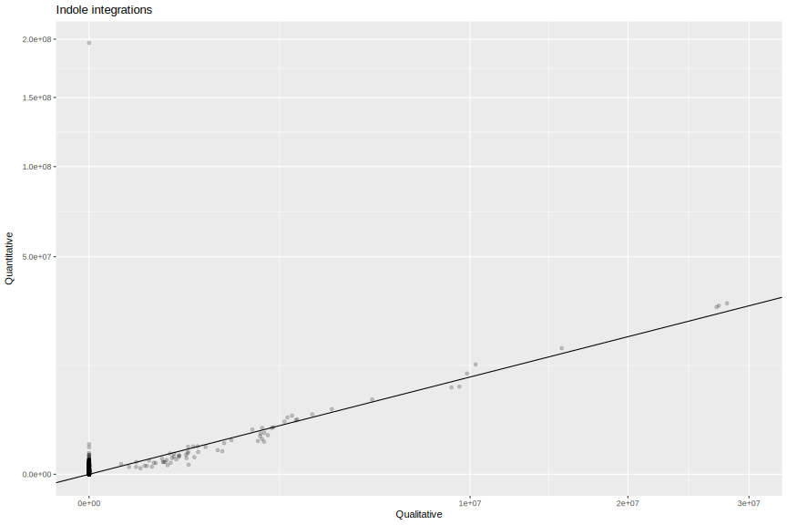
quant.meta <- quant.meta %>% mutate(indole_quant = quant$indole/quant.slopes["indole"])
ggplot(quant.meta %>% drop_na(RunDate) %>% arrange(isblank), aes(y=indole_quant, x=RunDate, color=isblank)) +
facet_wrap(vars(Year), scales="free_x", nrow=1)+
geom_point(size=0.5, alpha=0.5) + stat_summary(geom="line", fun="mean", size=1)+ scale_y_sqrt()+ theme_bw()+ theme(legend.position="top")+
labs(x="GC run date", y="Quantitative indole integration", color="Markes blank?")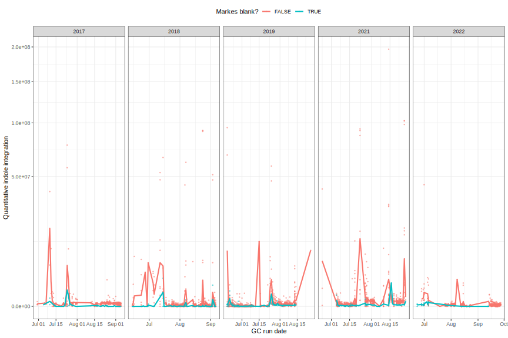
Read metadata
#accounts for skips
verdicts <- read_tsv("data/volatiles/RMBL GC-MS Data Inventory - ipogc181921.tsv") %>%
select(Filename=FileName, sample, verdict, status, FullName) %>%
mutate(Folder = str_remove(dirname(FullName),"C:/GCMSsolution/Data/Project1/"), .keep="unused") %>%
mutate(sample = na_if(sample,"") %>% coalesce(Filename)) %>% #fill in samples with no change
drop_na(sample) %>% # when both Filename and Sample are NA
filter(is.na(verdict) | verdict!="mismatched") %>% # fuzzy matching misassigned these to a Markes entry
filter(!duplicated(Filename)) # a couple nonunique filenames
#TODO one verdict = skip-lookup but no qgb to look up last filename: OTC_Z3_190805_8102019_24.qgd
##### 2018 + 2019 | bb + GNA + SC | OTC + Perc ######
# field metadata
perc <- read_csv("data/volatiles/CWu Ipomopsis Scent Metadata - Percivals2018_2019.csv")
otc <- read_csv("data/volatiles/CWu Ipomopsis Scent Metadata - OTC2018_2019.csv") %>%
rename(temp=OI) %>% mutate(temp = recode(temp,"in"="warmed","out"="control"))
# manually split filenames and drop chromatograms that were redone
files <- read_tsv("data/volatiles/CWu Ipomopsis Scent Metadata - CWu_samples_text2.tsv") %>%
rename(temp=OI) %>% mutate(temp = recode(temp,"in"="warmed","out"="control")) %>% filter(is.na(Drop)) %>%
left_join(verdicts)
# merge metadata and filenames
perc2 <- left_join(perc,files, by=c("Date","DN","Tissue","Sample2"), suffix=c("",".f"))
otc2 <- left_join(otc, files, by=c("Date","Site","temp","DN","Tissue","Sample2"), suffix=c("",".f")) %>%
mutate(PlantType = if_else(temp == "air", "air", PlantType))
###### 2021 | GNA + SC | OTC ######
# field metadata
sc21 <- read_tsv("data/volatiles/2021 Spring Creek Volatiles - 2021.tsv") %>%
mutate(PlantType=if_else(plant=="air", "air", "ten"))
gna21 <- read_tsv("data/volatiles/2021 GNA Volatiles - 2021.tsv") %>%
mutate(time="day", PlantType=if_else(plant=="air", "air", "agg"))
# automatically split filenames, manually edit, drop chromatograms that were redone, and read back in
# tibble(Filename = rownames(ipo.all)) %>%
# filter(str_detect(Filename, "2021"),
# str_detect(Filename, "SC_|GNA_")) %>%
# separate(Filename, into=c("site","vial","sampledate","rundate","GCn"), sep="_", remove=FALSE, convert=TRUE) %>%
# mutate(GCn = str_remove(GCn, ".qgd")) %>% write_tsv("files21_auto.tsv")
files21 <- read_tsv("data/volatiles/CWu Ipomopsis Scent Metadata - files21.tsv") %>%
mutate(rundate = ymd(paste("2021", str_sub(rundate,1,1), str_sub(rundate, 2, -5))),
sampledate = ymd(sampledate)) %>%
filter(is.na(drop)) %>% #drop samples that were redone
left_join(verdicts)
#TODO check that the presumed redos in files21 were actually leaks/skips
#merge metadata and filenames
otc21 <- bind_rows(SC=sc21, GNA=gna21, .id="site") %>%
left_join(files21, by=c("vial","site")) %>%
drop_na(plant) %>% # two contaminated traps, not used
mutate(sampledate = as.character(sampledate),
Year = 2021, Tissue = if_else(plant == "air", "air", "flower"), Expt="otc",
location = recode(location,"inside"="warmed","outside"="control"),
PlantID = paste0(chamber, plant)) %>%
rename(Site=site, Collector=observer, Date=date, DN=time, temp=location, Bag=bag, Pump=pump, End=end, Equil=equil, Duration=pumping,
NumFlrs = flowers, NumBuds=buds, PumpID = pump_id, SoilVWC = VWC, Comments = notes, SampleDate=sampledate,
RunDate=rundate,GCOrder=GCn)
####### 2021 | Maxfield | OTC #######
#automatically split filenames. Filename2 accounts for skip
maxfiles <- read_csv("data/volatiles/filenames_metadata - filenames_metadata.csv") %>%
left_join(verdicts) %>% # checked that sample matches up with old Filename2
mutate(Is2021 = str_detect(Filename,"_210")) %>%
filter(Maxfield==1 & Year=="2021") %>%
separate(Filename2, into=c("plantid","vial","date","rundate","sequence","ext"),remove=F) %>%
mutate(across(c(plantid, vial), na_if,"NA")) %>%
mutate(date = ymd(date), vial=as.character(vial),
YearFilament = ifelse(date>ymd("2021-07-21"),"2021fil2","2021"))
#field metadata, joined with treatments
GCMS_metadata1 <- read_csv("data/volatiles/2021 Maxfield Volatiles - 2021.csv") %>% mutate(plotid=paste0(plot, subplot)) %>%
left_join(read_csv("data/2021 Maxfield Rosettes - 2021OTCs.csv") %>% mutate(plant=as.character(plant)),
by=c("plotid","plant","plantid"))
#look up plant IDs for each GC tube (vial column also has A/B for multiple samples)
max21.oldformat <- bind_rows(
left_join(maxfiles %>% filter(vial %in% c("A","B")), GCMS_metadata1, by=c("plantid","vial","date")),
left_join(maxfiles %>% filter(!vial %in% c("A","B") & is.na(plantid)), GCMS_metadata1, by=c("vial","date")), #vial numbers only
left_join(maxfiles %>% filter(!vial %in% c("A","B") &!is.na(plantid)), GCMS_metadata1, by=c("plantid","date"))) %>% #plantid
mutate(type=factor(ifelse(plant=="air","ambient","floral")),
temp=factor(temp.y), snow=factor(snow),
plantid= coalesce(plantid, plantid.y))
#rename columns to match CWu metadata format
max21 <- max21.oldformat %>% #put in line with CWu metadata
rename(Date=date, RunDate_text=rundate,
Comments=notes, Collector=observer, Bag=bag, Pump=pump,End=end,
NumFlrs=flowers, NumBuds=buds, PumpID=pump_id, SoilVWC=VWC,
PlantType=type, PlantID=plantid) %>%
mutate(vial=as.integer(recode(vial, "A"="1001", "B"="1002")),
RunDate_text = as.integer(RunDate_text),
PlantType=recode(PlantType, "ambient"="air", "floral"="agg"),
Tissue=recode(PlantType, "agg"="flower"),
Expt="otc",Site="Maxfield",DN="day",
temp=recode(temp,"OTC"="warmed"))
######## Combine all metadata tables #########
meta <- bind_rows(otc=bind_rows(otc2, otc21, max21), perc=perc2, .id="expt") %>%
mutate_if(is.character, as.factor) %>%
mutate(Equil=Pump-Bag, Duration=End-Pump, Total=End-Bag,
Pump_datehour = paste(Date, Pump) %>% ymd_hms(tz="America/Denver") %>% round_date("hour"),
Expt=expt) %>% #TODO sort thru Expt==NA
#Add mean temperature of OTCs or controls at time of sampling
left_join(read_csv("data/hobos_mean.csv") %>% select(-date) %>%
mutate(datetime = with_tz(datetime, "America/Denver")), #stored in UTC!
by = c("Site"="site", "Pump_datehour"="datetime")) %>%
mutate(mean_temp_C_treatment = if_else(temp=="warmed", mean_temp_C_warmed, mean_temp_C_control))
meta %>% write.csv("data/volatiles/CWu_meta21.csv")
meta %>% count(Year, Temp, Tissue, PlantType, Site, temp, DN, Expt) %>% kable(caption="Sample size")| Year | Temp | Tissue | PlantType | Site | temp | DN | Expt | n |
|---|---|---|---|---|---|---|---|---|
| 2018 | cool | air | air | NA | NA | day | perc | 4 |
| 2018 | cool | air | air | NA | NA | night | perc | 4 |
| 2018 | cool | flower | agg | NA | NA | day | perc | 10 |
| 2018 | cool | flower | agg | NA | NA | night | perc | 9 |
| 2018 | cool | flower | ten | NA | NA | day | perc | 8 |
| 2018 | cool | flower | ten | NA | NA | night | perc | 9 |
| 2018 | warm | air | air | NA | NA | day | perc | 4 |
| 2018 | warm | air | air | NA | NA | night | perc | 4 |
| 2018 | warm | flower | agg | NA | NA | day | perc | 8 |
| 2018 | warm | flower | agg | NA | NA | night | perc | 7 |
| 2018 | warm | flower | ten | NA | NA | day | perc | 8 |
| 2018 | warm | flower | ten | NA | NA | night | perc | 8 |
| 2018 | NA | air | air | GNA | air | day | otc | 6 |
| 2018 | NA | air | air | bb | air | day | otc | 4 |
| 2018 | NA | flower | agg | GNA | control | day | otc | 16 |
| 2018 | NA | flower | agg | GNA | warmed | day | otc | 31 |
| 2018 | NA | flower | agg | bb | control | day | otc | 13 |
| 2018 | NA | flower | agg | bb | warmed | day | otc | 13 |
| 2018 | NA | leaf | agg | GNA | control | day | otc | 1 |
| 2018 | NA | leaf | agg | bb | warmed | day | otc | 1 |
| 2019 | cool | air | air | NA | NA | day | perc | 4 |
| 2019 | cool | air | air | NA | NA | night | perc | 3 |
| 2019 | cool | flower | agg | NA | NA | day | perc | 5 |
| 2019 | cool | flower | agg | NA | NA | night | perc | 4 |
| 2019 | cool | flower | ten | NA | NA | day | perc | 6 |
| 2019 | cool | flower | ten | NA | NA | night | perc | 5 |
| 2019 | cool | leaf | agg | NA | NA | day | perc | 4 |
| 2019 | cool | leaf | ten | NA | NA | day | perc | 3 |
| 2019 | warm | air | air | NA | NA | day | perc | 4 |
| 2019 | warm | air | air | NA | NA | night | perc | 2 |
| 2019 | warm | flower | agg | NA | NA | day | perc | 6 |
| 2019 | warm | flower | agg | NA | NA | night | perc | 6 |
| 2019 | warm | flower | ten | NA | NA | day | perc | 4 |
| 2019 | warm | flower | ten | NA | NA | night | perc | 5 |
| 2019 | warm | leaf | agg | NA | NA | day | perc | 4 |
| 2019 | warm | leaf | ten | NA | NA | day | perc | 3 |
| 2019 | NA | air | air | GNA | air | day | otc | 3 |
| 2019 | NA | air | air | SC | air | day | otc | 2 |
| 2019 | NA | air | air | SC | air | night | otc | 3 |
| 2019 | NA | flower | agg | GNA | control | day | otc | 11 |
| 2019 | NA | flower | agg | GNA | warmed | day | otc | 16 |
| 2019 | NA | flower | ten | SC | control | day | otc | 10 |
| 2019 | NA | flower | ten | SC | control | night | otc | 9 |
| 2019 | NA | flower | ten | SC | warmed | day | otc | 11 |
| 2019 | NA | flower | ten | SC | warmed | night | otc | 9 |
| 2019 | NA | leaf | agg | GNA | control | day | otc | 10 |
| 2019 | NA | leaf | agg | GNA | warmed | day | otc | 11 |
| 2019 | NA | leaf | ten | SC | control | day | otc | 9 |
| 2019 | NA | leaf | ten | SC | warmed | day | otc | 11 |
| 2021 | NA | air | air | GNA | control | day | otc | 1 |
| 2021 | NA | air | air | GNA | NA | day | otc | 6 |
| 2021 | NA | air | air | Maxfield | NA | day | otc | 9 |
| 2021 | NA | air | air | SC | air | day | otc | 1 |
| 2021 | NA | air | air | SC | air | night | otc | 5 |
| 2021 | NA | air | air | SC | control | day | otc | 3 |
| 2021 | NA | air | air | SC | control | night | otc | 1 |
| 2021 | NA | air | air | SC | NA | day | otc | 1 |
| 2021 | NA | air | air | SC | NA | night | otc | 2 |
| 2021 | NA | flower | agg | GNA | control | day | otc | 32 |
| 2021 | NA | flower | agg | GNA | warmed | day | otc | 34 |
| 2021 | NA | flower | agg | Maxfield | control | day | otc | 38 |
| 2021 | NA | flower | agg | Maxfield | warmed | day | otc | 44 |
| 2021 | NA | flower | ten | SC | control | day | otc | 30 |
| 2021 | NA | flower | ten | SC | control | night | otc | 31 |
| 2021 | NA | flower | ten | SC | warmed | day | otc | 41 |
| 2021 | NA | flower | ten | SC | warmed | night | otc | 46 |
tempcol <- set_names(brewer.pal(3, "Set1")[c(2,1)], c("control", "warmed"))#OTCs
Tempcol <- set_names(brewer.pal(3, "Set1")[c(2,1)], c("cool", "warm"))#PercivalsMissing files
#perc2 %>% filter(is.na(Filename)) %>% select("n") %>% write.csv("perc_nomatch.csv")
#otc2 %>% filter(is.na(Filename)) %>% select("n") %>% write.csv("otc_nomatch.csv")
meta %>% filter(is.na(Filename)) %>% #no filename
filter(is.na(lost)) %>% # 2021 samples "lost" (to what?)
filter(is.na(nomatch) | nomatch != "NR") %>% # samples not run
select(1:16) %>% kable(caption = "have metadata, no chromatogram")# & nomatch!="NR"| expt | n | Year | Date | DN | Site | PlantType | Tissue | temp | Sample | Sample2 | PlantID | nomatch | Bag | Pump | End |
|---|---|---|---|---|---|---|---|---|---|---|---|---|---|---|---|
| otc | 184 | 2018 | 2018-07-25 | day | GNA | agg | flower | warmed | KM10-B1 | KM10B1 | KM10B1 | 0 | 10:13:00 | 10:43:00 | 10:58:00 |
| otc | 37 | 2019 | 2019-07-31 | day | GNA | agg | flower | warmed | OTC-W1 | W1 | W1 | 0 | 11:53:00 | 12:26:00 | 12:41:00 |
| otc | 83 | 2019 | 2019-08-02 | day | SC | ten | leaf | warmed | OTC-A2-leaf | A2 | A2 | 0 | 12:50:00 | 13:20:00 | 13:35:00 |
| otc | 84 | 2019 | 2019-08-02 | day | SC | ten | leaf | warmed | OTC-C3-leaf | C3 | C3 | 0 | 13:08:00 | 13:41:00 | 13:56:00 |
| otc | 62 | 2019 | 2019-08-02 | day | SC | ten | leaf | warmed | OTC-D1-leaf | D1 | D1 | NA | 13:22:00 | 13:58:00 | 14:13:00 |
| otc | 5 | 2019 | 2019-08-02 | night | SC | ten | flower | control | SC9 | 9 | 9 | 0 | 20:21:00 | 20:51:00 | 21:06:00 |
| otc | 106 | 2019 | 2019-08-05 | day | GNA | agg | leaf | control | GNA5-leaf | 5 | 5 | NA | 11:49:00 | 12:19:00 | 12:34:00 |
| otc | NA | 2021 | 2021-07-15 | night | SC | ten | flower | warmed | NA | NA | B238 | NA | 19:46:00 | 20:20:00 | 20:35:00 |
| otc | NA | 2021 | 2021-07-26 | night | SC | air | air | air | NA | NA | XEair | NA | 22:10:00 | 22:26:00 | 22:41:00 |
| otc | NA | 2021 | 2021-07-26 | night | SC | ten | flower | warmed | NA | NA | F8 | NA | 21:47:00 | 22:17:00 | 22:32:00 |
| otc | NA | 2021 | 2021-07-16 | day | GNA | agg | flower | control | NA | NA | XL360 | NA | 09:04:00 | 09:35:00 | 09:50:00 |
| otc | NA | 2021 | 2021-07-16 | day | GNA | agg | flower | control | NA | NA | XN2 | NA | 09:44:00 | 10:14:00 | 10:29:00 |
| perc | 21 | 2019 | 2019-07-25 | day | NA | agg | flower | NA | A38 | A38 | NA | NA | 10:24:00 | 10:54:00 | 11:09:00 |
| perc | 47 | 2019 | 2019-07-25 | night | NA | agg | flower | NA | A79 | A79 | NA | nm | 21:02:00 | 21:35:00 | 21:50:00 |
#otc21 %>% filter(is.na(Filename), is.na(lost)) %>% select(1:18) %>% kable(caption = "have metadata, no chromatogram")
#max21 is not missing any files
meta %>% filter(!is.na(lost)) %>% select(1:16) %>% kable(caption = "have metadata, samples lost")| expt | n | Year | Date | DN | Site | PlantType | Tissue | temp | Sample | Sample2 | PlantID | nomatch | Bag | Pump | End |
|---|---|---|---|---|---|---|---|---|---|---|---|---|---|---|---|
| otc | NA | 2021 | 2021-07-15 | night | SC | ten | flower | control | NA | NA | XI185 | NA | 19:46:00 | 20:16:00 | 20:31:00 |
| otc | NA | 2021 | 2021-07-15 | night | SC | ten | flower | warmed | NA | NA | I196 | NA | 19:48:00 | 20:18:00 | 20:33:00 |
| otc | NA | 2021 | 2021-07-15 | night | SC | ten | flower | warmed | NA | NA | I227 | NA | 19:50:00 | 20:20:00 | 20:35:00 |
| otc | NA | 2021 | 2021-07-15 | night | SC | ten | flower | control | NA | NA | XI139 | NA | 19:55:00 | 20:25:00 | 20:40:00 |
| otc | NA | 2021 | 2021-07-15 | night | SC | ten | flower | warmed | NA | NA | I192 | NA | 20:17:00 | 20:47:00 | 21:02:00 |
| otc | NA | 2021 | 2021-07-15 | night | SC | ten | flower | control | NA | NA | XG5 | NA | 20:27:00 | 20:57:00 | 21:12:00 |
| otc | NA | 2021 | 2021-07-15 | night | SC | ten | flower | warmed | NA | NA | G99 | NA | 20:29:00 | 20:59:00 | 21:14:00 |
| otc | NA | 2021 | 2021-07-15 | night | SC | air | air | NA | NA | NA | Iair | NA | 20:36:00 | 21:06:00 | 21:21:00 |
| otc | NA | 2021 | 2021-07-15 | night | SC | ten | flower | warmed | NA | NA | B294 | NA | 19:44:00 | 20:18:00 | 20:33:00 |
| otc | NA | 2021 | 2021-07-16 | day | GNA | agg | flower | control | NA | NA | XL183 | NA | 09:06:00 | 09:36:00 | 09:51:00 |
| otc | NA | 2021 | 2021-07-16 | day | GNA | agg | flower | warmed | NA | NA | L14 | NA | 09:12:00 | 09:42:00 | 09:57:00 |
| otc | NA | 2021 | 2021-07-16 | day | GNA | agg | flower | warmed | NA | NA | N385 | NA | 09:46:00 | 10:16:00 | 10:31:00 |
| otc | NA | 2021 | 2021-07-16 | day | GNA | agg | flower | control | NA | NA | XN654 | NA | 09:49:00 | 10:19:00 | 10:34:00 |
| otc | NA | 2021 | 2021-07-16 | day | GNA | agg | flower | control | NA | NA | XP225 | NA | 10:14:00 | 10:49:00 | 11:04:00 |
| otc | NA | 2021 | 2021-07-16 | day | GNA | agg | flower | control | NA | NA | XP114 | NA | 10:25:00 | 10:55:00 | 11:10:00 |
| otc | NA | 2021 | 2021-07-16 | day | GNA | agg | flower | warmed | NA | NA | P195 | NA | 10:28:00 | 10:58:00 | 11:13:00 |
Missing metadata
#files %>% filter(!(Filename %in% meta$Filename)) %>% select("n") %>% write.csv("CWu_samples_nomatch.csv")
files %>% filter(!(Filename %in% meta$Filename) & Expt!="") %>% select(c("Filename", "Date","Site","temp","DN","Tissue","Sample2")) %>% kable(caption = "have chromatogram, no metadata")| Filename | Date | Site | temp | DN | Tissue | Sample2 |
|---|---|---|---|---|---|---|
| AirlastJuly25_08312018.qgd | 2018-07-25 | GNA | air | day | air | Airlast |
| NatAreaXUP01July25_08312018.qgd | 2018-07-25 | GNA | warmed | day | flower | XUP01 |
| GNA5redo_leaf_190805_8112019_17.qgd | 2019-08-05 | GNA | control | day | leaf | 5redo |
| A188DredoAug16renamed_09022018.qgd | 2018-08-16 | NA | NA | day | flower | A188redo |
| T196DredoAug16_09022018.qgd | 2018-08-16 | NA | NA | day | flower | T196redo |
| A38redo_day_190725_872019_03.qgd | 2019-07-25 | NA | NA | day | flower | A38redo |
| A91_leaf_190725_882019_02.qgd | 2019-07-25 | NA | NA | day | leaf | A91 |
files21 %>% filter(!(Filename %in% meta$Filename)) %>% kable(caption = "have chromatogram, no metadata")| sample | site | vial | sampledate | rundate | GCn | drop | Notes | Filename | verdict | status | Folder |
|---|---|---|---|---|---|---|---|---|---|---|---|
| GNA_121_210730_7312021_05.qgd | GNA | 121 | 2021-07-30 | 2021-07-31 | 5 | NA | NA | GNA_121_210730_7312021_05.qgd | NA | Desorbed NA | Campbell RMBL Data/Ipomopsis 2020 |
| SC_140_210727_8202021_05.qgd | SC | 140 | 2021-07-27 | 2021-08-20 | 5 | NA | NA | SC_140_210727_8202021_05.qgd | NA | Desorbed NA | Campbell RMBL Data/Ipomopsis 2020 |
| SC_101_210727_8202021_02.qgd | SC | 101 | 2021-07-27 | 2021-08-20 | 2 | NA | NA | SC_101_210727_8202021_02.qgd | NA | Desorbed NA | Campbell RMBL Data/Ipomopsis 2020 |
GNA_121 and SC_101 traps contaminated, no metadata for SC_140. maxfiles is not missing any metadata. ## Times
ggplot(meta, aes(x=paste(Expt, DN,Year), y=Pump, color=DN)) +
geom_boxplot() + geom_point()+
theme_minimal() + theme(axis.text.x=element_text(angle=90))+
ggtitle("Sampling time of day")
meta %>% group_by(Expt, DN, Tissue, Year) %>% drop_na(Pump) %>%
summarize(first=seconds_to_period(min(Pump)), last=seconds_to_period(max(Pump))) %>% kable(caption="Pump times")| Expt | DN | Tissue | Year | first | last |
|---|---|---|---|---|---|
| otc | day | air | 2018 | 9H 15M 0S | 14H 14M 0S |
| otc | day | air | 2019 | 9H 51M 0S | 13H 4M 0S |
| otc | day | air | 2021 | 9H 31M 0S | 12H 3M 0S |
| otc | day | flower | 2018 | 9H 10M 0S | 14H 55M 0S |
| otc | day | flower | 2019 | 10H 10M 0S | 13H 24M 0S |
| otc | day | flower | 2021 | 9H 10M 0S | 13H 1M 0S |
| otc | day | leaf | 2018 | 10H 25M 0S | 10H 47M 0S |
| otc | day | leaf | 2019 | 9H 55M 0S | 13H 58M 0S |
| otc | night | air | 2019 | 19H 43M 0S | 21H 48M 0S |
| otc | night | air | 2021 | 20H 17M 0S | 22H 26M 0S |
| otc | night | flower | 2019 | 20H 7M 0S | 21H 50M 0S |
| otc | night | flower | 2021 | 20H 15M 0S | 22H 56M 0S |
| perc | day | air | 2018 | 9H 20M 0S | 13H 50M 0S |
| perc | day | air | 2019 | 9H 21M 0S | 17H 37M 0S |
| perc | day | flower | 2018 | 9H 34M 0S | 13H 53M 0S |
| perc | day | flower | 2019 | 9H 31M 0S | 12H 39M 0S |
| perc | day | leaf | 2019 | 14H 17M 0S | 17H 51M 0S |
| perc | night | air | 2018 | 20H 34M 0S | 22H 43M 0S |
| perc | night | air | 2019 | 20H 30M 0S | 23H 32M 0S |
| perc | night | flower | 2018 | 21H 0M 0S | 22H 50M 0S |
| perc | night | flower | 2019 | 20H 44M 0S | 23H 18M 0S |
ggplot(meta, aes(x=paste(Expt, Site, Year), y=Total/60, color=Tissue)) +
geom_point(position=position_dodge(width=0.3))+
theme_minimal() + theme(axis.text.x=element_text(angle=90)) +
ggtitle("Total sampling duration")+
ylab("Equilibration plus pumping time (min)")
OTC actual temperature
ggplot(meta %>% filter(Expt=="otc", temp !="air", Site != "bb"),
aes(y=mean_temp_C_treatment, x=paste(Year, Site, temp), color=temp)) +
facet_grid(cols=vars(DN), scales="free_x", space="free_x")+
geom_boxplot(outlier.shape=NA)+ geom_point(alpha=0.2)+
geom_path(aes(group=paste(Year, Site, Pump_datehour)), color="black", alpha=0.3)+
theme_minimal() + theme(axis.text.x=element_text(angle=90)) +
scale_color_brewer(palette = "Set1", direction=-1)+
labs(y="Mean hourly temperature (\u00B0C)", x=("Year, site"), color="Temperature")
ggplot(meta %>% filter(Expt=="otc", temp !="air", Site != "bb"),
aes(y=mean_temp_C_warmed, x=mean_temp_C_control, color=DN))+
geom_abline(slope=1, intercept=0)+ geom_smooth(se=F)+
geom_text(aes(label=round(mean_temp_C_warmed-mean_temp_C_control)), alpha=0.2)+ theme_minimal() +
labs(x= "Mean temperature, controls (\u00B0C)", y="Mean temperature, warmed (\u00B0C)", color="Time")
ggplot(meta %>% filter(Expt=="otc", temp !="air", Site != "bb"),
aes(y=mean_temp_C_warmed-mean_temp_C_control, x=hour(Pump), color=DN))+
geom_point(alpha=0.1)+geom_smooth(aes(group=paste(Site, Year, DN)), se=F, method="lm")+ theme_minimal() +
labs(x= "Time of day", y="Temperature difference (\u00B0C)", color="Time")
meta %>% filter(Expt=="otc", temp !="air", Site != "bb") %>%
mutate(mean_temp_C_diff = mean_temp_C_warmed-mean_temp_C_control) %>%
group_by(DN) %>% summarize(mean_temp_C_diff.SD = sd(mean_temp_C_diff, na.rm=T),
mean_temp_C_diff = mean(mean_temp_C_diff, na.rm=T)) %>%
kable(caption="temp difference during sampling")| DN | mean_temp_C_diff.SD | mean_temp_C_diff |
|---|---|---|
| day | 2.5252856 | 5.308540 |
| night | 0.4074518 | 1.033114 |
ggplot(meta %>% filter(Expt=="otc", temp !="air", Site != "bb"),
aes(y=mean_temp_C_warmed-mean_temp_C_control, x=mean_temp_C_control, color=DN))+
geom_point(alpha=0.1)+geom_smooth(aes(group=paste(Site, Year, DN)), se=F, method="lm")+ theme_minimal() +
labs(x= "Mean temperature, controls (\u00B0C)", y="Temperature difference (\u00B0C)", color="Time")ggplot(meta %>% filter(Expt=="otc", temp !="air", Site != "bb"),
aes(x=hour(Pump), y=mean_temp_C_control, color=DN))+
geom_point(alpha=0.1)+geom_smooth(aes(group=paste(Site, Year, DN)), se=F, method="lm")+ theme_minimal() +
scale_x_continuous(n.breaks=20) +
labs(x= "Time of day", y="Temperature in controls (\u00B0C)", color="Time")
Filtering criteria
Flowers
sv <- meta %>% drop_na(Filename)
#ipo.gc <- ipo.all[sv$Filename,]
library(bouquet)
ipo.data.cut <- ipo.data[ipo.data$Filename %in% sv$Filename,]
ipo.data.cut$Filename <- sv$Filename[match(ipo.data.cut$Filename, sv$Filename)]
ipo.data.cut <- ipo.data.cut[ipo.data.cut$Name != "", ] #drop unidentified peaks
ipo.data.cut$Name <- droplevels(ipo.data.cut$Name)
longdata <- load_longdata(ipo.data.cut, sample="Filename", RT="Ret.Time", name="Name", area="Area", match = "SI", maxmatch=100)
metadata <- sv %>% as.data.frame() %>% #tibbles break bouquet's add_count_freqs
rename(thesample=sample) %>% #name conflict with bouquet
mutate(Tissue = fct_recode(Tissue, ambient="air", floral="flower", leaf="leaf"),
PlantType = factor(if_else(Tissue=="leaf",paste0(PlantType,Tissue), as.character(PlantType)))) %>%
load_metadata(date="Date", sample="Filename", group="PlantType", type="Tissue")
vol.all <- make_sampletable(longdata, metadata)
chems <- make_chemtable(longdata, metadata)
### Flower filtering
chemsf <- chems %>%
filter_RT(2, 17) %>%
filter_match(0.8) %>%
filter_freq(0.1, group = TRUE) %>% #now filter separately for each species
filter_contaminant(cont.list = c("Hexyl chloroformate", "Disulfide, di-tert-dodecyl",
"2,2,4-Trimethyl-1,3-pentanediol diisobutyrate",
"2,4,6-trimethyloctane",
"Decane, 3,8-dimethyl-", "Ethanone, 1-cyclopentyl-",
"o-Xylene",
"3,5-dimethyloctane","2-hexyldecan-1-ol",
"nonylcyclopropane","nonyl prop-1-en-2-yl carbonate",
"(2E)-2,7-dimethylocta-2,6-dien-1-ol")) %>% #a quant integration that coelutes with b-myrcene
filter_area(min_maximum = 1e6) %>%
filter_ambient_ratio(vol.all, metadata, ratio = 3) %>%
combine_filters()
chemsf$filter_final <- with(chemsf, (filter_RT == "OK" & filter_match =="OK" &
(filter_freq.agg == "OK" | filter_freq.ten =="OK") &
filter_area == "OK" & filter_contaminant == "OK") |
name %in% c("indole"))#quant_betterthan_qual #manually include indole (rare)
#now run t-tests after rarity filtering
#don't filter by ambient ratio first, see paper on problems: https://doi.org/10.1186/1471-2105-11-450
chemsf <- bind_rows(chemsf %>% filter(filter_final) %>%
filter_ambient_ttest(prune_sampletable(vol.all, chemsf, metadata),
metadata, alpha = 0.05, adjust = "fdr"),
chemsf %>% filter(!filter_final)) %>%
mutate(filter_ambient_ttest=fct_na_value_to_level(filter_ambient_ttest, "notchecked"),
filter_final = filter_final & filter_ambient_ratio =="OK") %>%
arrange(match(name, colnames(vol.all)))
bouquet::plot_filters(chemsf, option="rarity", yrange=3.5)
bouquet::plot_filters(chemsf, option="ambient", yrange=2.5)
bouquet::plot_filters(chemsf, option="volcano", yrange=2.5, alpha_excluded = 0.5)
bouquet::plot_filters(chemsf, option="prop")
Retention times
longdata.RT <- longdata %>% filter(name %in% chemsf$name[chemsf$filter_final]) %>%
left_join(select(metadata, sample, Year)) %>%
group_by(name) %>% mutate(n=n(), RT.sd=sd(RT)) %>% ungroup() %>%
mutate(name=fct_reorder(name, RT))
RT.year <- longdata.RT %>% group_by(name, Year) %>% summarize(RT=median(RT)) %>% pivot_wider(names_from=Year, values_from=RT) %>%
mutate(mean1821 = (`2018`+`2021`)/2, diff1819=`2018`-`2019`, diff1921=`2019`-`2021`,
mean1821 = replace_na(mean1821, `2019`))
RT.tol <- 0.17 # 10 seconds before or after in quantitative params
ggplot(longdata.RT, aes(x=RT, y=name,color=RT.sd)) + geom_point(position=position_jitter(width=0, height=0.5)) +
scale_color_viridis_c(option="magma") + theme_dark()+
geom_text(aes(x=4.5, label=n), color="grey80") +
stat_summary(fun="median", fun.max=~median(.x)+RT.tol, fun.min=~median(.x)-RT.tol, geom="pointrange", color="white", size=0.5, shape=15)ggplot(longdata.RT, aes(y=RT, x=factor(Year), color=RT.sd)) +
facet_wrap(vars(name), scales="free_y") + geom_boxplot() + scale_color_viridis_c(option="magma") + theme_dark() +
geom_pointrange(data=RT.year, aes(y=mean1821, ymin=mean1821-0.1, ymax=mean1821+0.1, x="2019"), color="blue")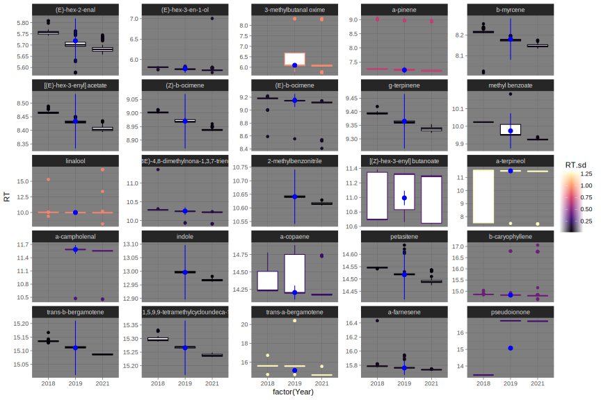
#RT fixes
longdata.bergamotene <- longdata %>% filter(str_detect(name , "bergamotene")) %>%
left_join(select(metadata, sample, Year))
ggplot(longdata.bergamotene, aes(x=RT, fill=factor(Year))) + geom_histogram(binwidth=0.02) +
facet_wrap(vars(name), ncol=1) + scale_x_continuous(limits=c(NA,16))longdata.bergamotene %>% filter(RT < 15) %>% group_by(Year) %>% summarize(RT=median(RT)) %>% kable(digits=2)| Year | RT |
|---|---|
| 2018 | 14.70 |
| 2019 | 14.67 |
| 2021 | 14.64 |
longdata.butanoate <- longdata %>% filter(str_detect(name , "\\)-hex-3-enyl\\] butanoate")) %>%
left_join(select(metadata, sample, Year))
ggplot(longdata.butanoate, aes(x=RT, fill=factor(Year))) + geom_histogram(binwidth=0.02) +
facet_wrap(vars(name), ncol=1) + scale_x_continuous(limits=c(NA,NA))longdata.butanoate %>% mutate(EZ=ifelse(RT>11, "Z","E")) %>% group_by(EZ, Year) %>%
summarize(RT=median(RT)) %>% kable(digits=2)| EZ | Year | RT |
|---|---|---|
| E | 2018 | 10.69 |
| E | 2019 | 10.66 |
| E | 2021 | 10.64 |
| Z | 2018 | 11.35 |
| Z | 2019 | 11.32 |
| Z | 2021 | 11.30 |
Quant filtering
indole_quantqual <- left_join(quant.meta,
bind_cols(metadata %>% select(Year, Folder, type, Expt, PlantType, DN, RunDate, Filename=sample),
indole_quant=quant.scaled[as.character(metadata$sample),"indole"],
indole_qual=vol.all[as.character(metadata$sample),"indole"]) %>%
mutate(GCOrder = as.integer(str_match(Filename, "_([0-9][0-9]).qgd")[,2]),
Folder=str_remove(Folder,"Campbell RMBL Data/"))) %>%
mutate(type=coalesce(type, c("other","blank")[isblank+1]) %>% fct_relevel("other","blank"))
indole_quantqual %>% arrange(RunDate, GCOrder) %>%
select(Year, Folder, type, Expt, PlantType, DN, Filename,
RunDate, GCOrder, indole_quant, indole_qual) %>%
write_tsv("~/Downloads/indole_quant_qual.tsv", na="")
typecols <- c(other="orange", blank="grey", ambient="blue",floral="red",leaf="limegreen")
ggplot(filter(indole_quantqual, type!="leaf"), aes(color=type, fill=type, x=indole_quant)) +
facet_wrap(vars(Year), ncol=1) + geom_density(alpha=0.1, size=0.7) +
geom_point(aes(y=0.07-as.integer(factor(type))/100), size=3, shape="|") +
scale_x_sqrt() + coord_cartesian(ylim=c(0,0.06)) + theme_minimal() + theme(legend.position="top") +
scale_color_manual(values=typecols) + scale_fill_manual(values=typecols) +
labs(x="Quantitative indole integration", y="Density") 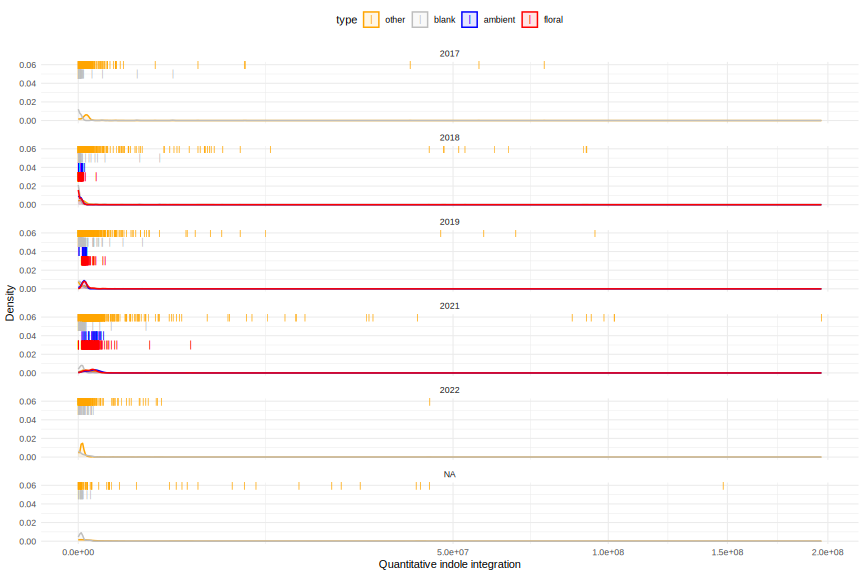
ggplot(filter(indole_quantqual, type!="leaf") %>% drop_na(Year), aes(color=type, y=indole_quant, x=RunDate)) +
facet_wrap(vars(Year), nrow=1, scales="free_x") + geom_hline(yintercept=0) + geom_point(alpha=0.5) +
stat_summary(geom="line", fun="mean", size=1)+
scale_y_sqrt() + theme_bw()+ scale_x_date(guide = guide_axis(angle=90))+
scale_color_manual(values=typecols) +
labs(y="Quantitative indole integration", "Date of GC run") 
ggplot(indole_quantqual %>% filter(type!="leaf", Year!=2018), aes(color=type, y=indole_quant, x=GCOrder)) +
facet_wrap(vars(Year), nrow=1, scales="free_x") + geom_hline(yintercept=0) + geom_point(alpha=0.5) +
stat_summary(aes(group=paste(type)), geom="line", fun="mean", size=1.5)+
scale_y_sqrt() + theme_bw()+
scale_color_manual(values=typecols)+
labs(y="Quantitative indole integration", x="Order in GC run")indole_quantqual %>% group_by(Year, type) %>% summarize(indole_quant=mean(indole_quant)) %>%
pivot_wider(names_from="type",values_from=indole_quant) %>%
kable(caption="means", digits=0)| Year | other | blank | ambient | floral | leaf |
|---|---|---|---|---|---|
| 2017 | 445340 | 107545 | NA | NA | NA |
| 2018 | 1072603 | 53192 | 1976 | 2528 | 5108 |
| 2019 | 305741 | 24008 | 11590 | 25322 | 14682 |
| 2021 | 1716607 | 39394 | 83865 | 90400 | NA |
| 2022 | 69020 | 11404 | NA | NA | NA |
| NA | 5064119 | 7321 | NA | NA | NA |
indole_quantqual %>% group_by(Year, type) %>% summarize(nonzero=mean(indole_quant>0)) %>%
pivot_wider(names_from="type",values_from=nonzero) %>%
kable(caption="proportion indole detection (nonzero)", digits=3)| Year | other | blank | ambient | floral | leaf |
|---|---|---|---|---|---|
| 2017 | 0.929 | 0.523 | NA | NA | NA |
| 2018 | 0.714 | 0.358 | 0.462 | 0.478 | 1.00 |
| 2019 | 0.577 | 0.607 | 0.952 | 1.000 | 0.98 |
| 2021 | 0.929 | 0.859 | 1.000 | 0.986 | NA |
| 2022 | 0.901 | 0.585 | NA | NA | NA |
| NA | 0.699 | 0.812 | NA | NA | NA |
quant.scaled.meta <- left_join(quant.meta,
bind_cols(metadata %>% select(Year, Folder, type, Expt, PlantType, DN, RunDate, Filename=sample),
quant.scaled[as.character(metadata$sample),])) %>%
drop_na(type) %>%
pivot_longer(all_of(colnames(quant.scaled)))
LoA.cutoff <- 0.8
quant.loa <- quant.scaled.meta %>%
group_by(Year, type, name) %>% summarize(value=quantile(value, LoA.cutoff), .groups="drop")
ggplot(quant.loa, aes(y=fct_reorder(name, value, max), color=type, x=value, shape=factor(Year), group=factor(Year))) +
geom_point(position=position_dodge(width=0.5)) + theme_minimal() +
scale_x_sqrt() + scale_color_manual(values=c("blue","red","green"))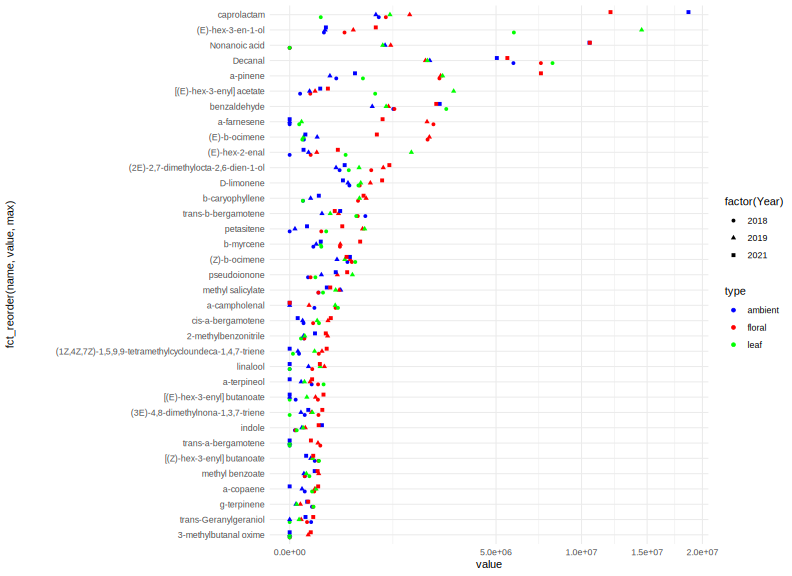
quant.loa %>% pivot_wider(names_from=type, values_from=value) %>%
ggplot(aes(x=floral/ambient, y=fct_reorder(name, floral/ambient, min))) +
geom_point(aes(color=factor(Year), shape=name %in% (chemsf %>% filter(filter_final) %>% pull(name))), size=2) +
scale_x_log10() + scale_shape_manual(values=c(1, 19))+
labs(x=paste0("Ratio of ",round(LoA.cutoff*100,0),"th percentile floral/ambient"), y="", color="Year", shape="Keep")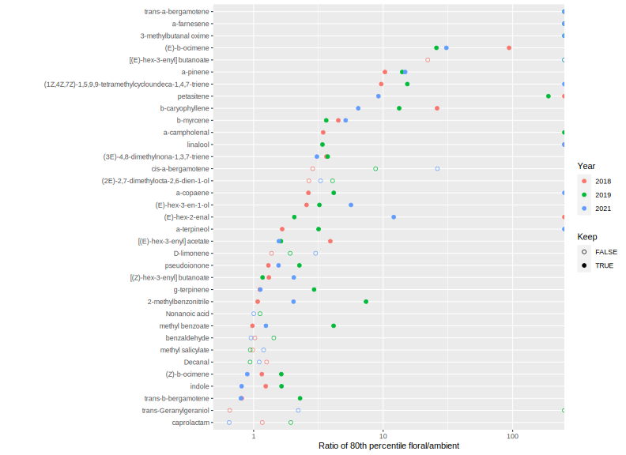
prop.above <- left_join(quant.scaled.meta %>% filter(type=="floral"),
quant.loa %>% filter(type=="ambient") %>% rename(LoA=value) %>% select(-type)) %>%
group_by(Year, name) %>% summarize(above_LoA = mean(value > LoA),
above_zero = mean(value > 0)) %>%
mutate(name=fct_reorder(name, above_LoA, max))
ggplot(prop.above %>% pivot_longer(starts_with("above_"), names_to="limit"),
aes(y=name, x=value, color=limit, shape=factor(Year), group=limit)) +
geom_point(size=2, position=position_dodge(width=0.5)) + theme_minimal()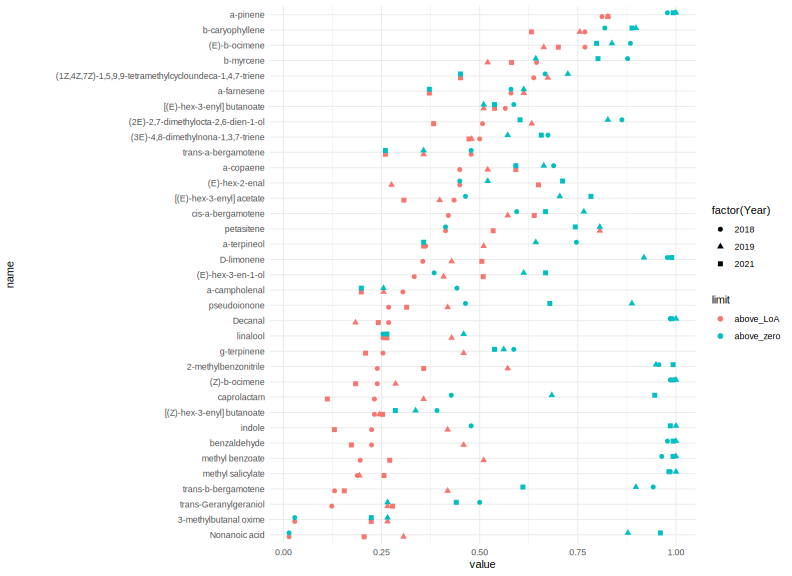
ggplot(prop.above, aes(x=above_zero, y=above_LoA, color=factor(Year))) +
geom_path(aes(group=name), color="grey90") + geom_text(aes(label=name)) +theme_minimal()ggplot(quant.scaled.meta %>% filter(name=="a-pinene"), aes(x=factor(Year), color=type, y=value)) + geom_boxplot() + scale_y_sqrt() + scale_color_manual(values=c("blue","red","green")) + labs(title="quant")
ggplot(metadata, aes(x=factor(Year), color=type, y=vol.all$`a-pinene`)) + geom_boxplot() + scale_y_sqrt() + scale_color_manual(values=c("blue","red","green")) + labs(title="qual")
#ggplot(svf, aes(x=Year, y=vol$`a-pinene`)) + geom_boxplot(color="red") + scale_y_sqrt() + labs(title="qual or quant")
pinene_quantqual <- left_join(quant.meta,
bind_cols(metadata %>% select(Year, Folder, type, Expt, PlantType, DN, RunDate, Filename=sample),
pinene_quant=quant.scaled[as.character(metadata$sample),"a-pinene"],
pinene_qual=vol.all[as.character(metadata$sample),"a-pinene"]) )
ggplot(pinene_quantqual %>% filter(Year %in% c(2018, 2019,2021)), aes(x=pinene_qual, y=pinene_quant)) + geom_point() + facet_wrap(vars(Year))Leaves
### Leaf filtering
meta.leaf <- metadata %>% mutate(type = fct_recode(type, floral = "leaf", flower = "floral")) #trick bouquet to think the leaf samples are floral TODO: hacky!
chems.leaf <- make_chemtable(longdata, meta.leaf)
chemsf.leaf <- chems.leaf %>%
filter_RT(2, 17) %>%
filter_match(0.8) %>%
filter_freq(0.25, group = TRUE) %>% #now filter separately for each species
filter_contaminant(cont.list = c("Hexyl chloroformate","Acetic acid, trifluoro-, undecyl ester",
"Hexylene glycol")) %>%
filter_area(min_maximum = 5e5) %>%
filter_ambient_ratio(vol.all, meta.leaf, ratio = 4) %>%
combine_filters()
chemsf.leaf$filter_final <- with(chemsf.leaf, filter_RT == "OK" & filter_match =="OK" &
(filter_freq.aggleaf == "OK" | filter_freq.tenleaf =="OK") &
filter_area == "OK" &
filter_contaminant == "OK")
#TODO bouquet needs to do a one-sided t-test! some compounds lower in blanks got a pass with low p value!
chemsf.leaf <- bind_rows(chemsf.leaf %>% filter(filter_final) %>%
filter_ambient_ttest(prune_sampletable(vol.all, chemsf.leaf, metadata),
metadata, alpha = 0.05, adjust = "fdr"),
chemsf.leaf %>% filter(!filter_final)) %>%
mutate(filter_ambient_ttest=fct_na_value_to_level(filter_ambient_ttest, "notchecked"),
filter_final = filter_final & filter_ambient_ratio =="OK") %>%
arrange(match(name, colnames(vol.all)))
bouquet::plot_filters(chemsf.leaf, option="rarity")
bouquet::plot_filters(chemsf.leaf, option="ambient", yrange=2.5)
bouquet::plot_filters(chemsf.leaf, option="volcano", yrange=2, alpha_excluded = 0.5)
bouquet::plot_filters(chemsf.leaf, option="prop")
#compare amounts in floral vs. leaf samples
chemsf <- chemsf %>% mutate(filter_ambient_leaf_ratio = chemsf.leaf$filter_ambient_ratio,
filter_ambient_leaf_ttest = chemsf.leaf$filter_ambient_ttest,
leaf_not_flower = filter_ambient_leaf_ratio=="OK" & filter_ambient_leaf_ttest=="OK" &
!(filter_ambient_ratio=="OK" & filter_ambient_ttest=="OK"))
kept_either <- chemsf$filter_final | chemsf.leaf$filter_final
ggplot(chemsf[kept_either,], aes(x=mean.floral, y= chemsf.leaf[kept_either,"mean.floral"], label=name, color=paste(filter_final,chemsf.leaf[kept_either,"filter_final"], sep=", ")))+ theme_minimal()+
geom_abline(slope=1, intercept=1) + geom_point(aes(size=RT), alpha=0.3)+ geom_text()+
scale_x_log10()+ scale_y_log10() + coord_fixed()+
scale_color_manual(labels=c("leaf","floral","both"),values=c("darkgreen","red","blue"))+
labs(x="Mean area in flowers", y= "Mean area in leaves", color="Kept in dataset")
Pruning
vol <- prune_sampletable(vol.all, chemsf, metadata)
vol.leaf <- prune_sampletable(vol.all, chemsf.leaf, meta.leaf)
colnames(vol)[!colnames(vol) %in% shortnames]character(0)names(head(sort(rowSums(vol>0)), 5))[1] "A188DAug16_09012018.qgd" "GNA_17_210716_7202021_18.qgd"
[3] "Maxfield_27_210723_822021_03.qgd" "Maxfield_9_210723_822021_05.qgd"
[5] "T196DAug16_09012018.qgd" files_exclude <- c("GNA_17_210716_7202021_18.qgd", "A188DAug16_09012018.qgd", "T196DAug16_09012018.qgd",
"T145DWarmAug10_08292018.qgd", "Maxfield_27_210723_822021_03.qgd", #filtered volatiles near zero
"SC_91_210715_8202021_10.qgd") #Artemisia leaves
#"OTC_Z2_leaf_190805_8102019_23.qgd" was excluded
files_exclude_leaf <- c("CWH1LeafJuly27_09022018.qgd","NatArea69leafrenamedJuly25_08312018.qgd", #lack leaf mass
"T164_leaf_190731_882019_18.qgd") #no filtered volatiles
svf <- metadata[metadata$type == "floral" & !(metadata$sample %in% files_exclude),]
svl <- metadata[metadata$type == "leaf" & !(metadata$sample %in% files_exclude_leaf),]
svf$Year <- factor(svf$Year)
svf <- svf %>% mutate_if(is.factor, droplevels) %>%
mutate(Treat = paste(temp, Temp) %>%
fct_collapse(control=c("control NA","NA cool"),warmed=c("NA warm","warmed NA")))
svl <- svl %>% mutate_if(is.factor, droplevels) %>%
mutate(Treat = paste(temp, Temp) %>%
fct_collapse(control=c("control NA","NA cool"),warmed=c("NA warm","warmed NA")))
vol <- vol[!(rownames(vol) %in% files_exclude) ,]
vol.leaf <- vol.leaf[!(rownames(vol.leaf) %in% files_exclude_leaf) ,]#TODO quant integrate these leaf volatiles: setdiff(colnames(vol.leaf), quant_betterthan_qual)
#quantitative integrations (scaled up to match qual integrations)
#this method only replaces compounds where the quant method did better than the qual method
quant.scaled.vol <- quant.scaled[rownames(vol),
colnames(quant.scaled) %in%
intersect(quant_betterthan_qual, colnames(vol))]
#TODO found that E/Z isomers of b-ocimene were accurate underneath LoA, dropping this step for all but indole (the manual addition to the auto filtering)
# Subtract limit of ambient (LoA) from each compound/year
quant.loa.use <- left_join(tibble(name= colnames(quant.scaled.vol)),
quant.loa %>% filter(type=="ambient", name %in% quant_betterthan_qual) %>%
pivot_wider(names_from=Year, values_from=value))
# for(yr in levels(svf$Year)) {
# thisyr <- svf$Year==yr
# quant.scaled.vol[thisyr,] <- sweep(quant.scaled.vol[thisyr,], 2, pull(quant.loa.use, yr), FUN = '-')
# }
for(yr in levels(svf$Year)) {
thisyr <- svf$Year==yr
quant.scaled.vol[thisyr,"indole"] <- quant.scaled.vol[thisyr,"indole"] - (quant.loa.use %>% filter(name=="indole") %>% pull(yr))
}
#Set resulting negative values to zero
quant.scaled.vol[quant.scaled.vol<0] <- 0
#plot(x=unlist(sqrt(vol[,colnames(quant.scaled.vol)])), y=sqrt(unlist(quant.scaled.vol)), xlab="qual", ylab="quant")
# svf %>% as_tibble() %>% select(sample, Year, PlantType, Expt, DN) %>%
# bind_cols(indole_qual = vol$indole, indole_quant = quant.all[rownames(vol),]$indole) %>%
# filter(PlantType=="ten") %>% drop_na(PlantType) %>%
# arrange(Year, Expt, DN) %>% View()
# write_tsv("~/Downloads/indole_quant_qual_comparison.tsv") %>%
# ggplot(aes(x=indole_qual, y=indole_quant/0.325))+geom_point() + geom_abline(slope=1, intercept = 0)
#swap in scaled and subtracted quant integrations
vol[,colnames(quant.scaled.vol)] <- quant.scaled.vol
# ggplot(bind_cols(vol, svf), aes(y=`indole`, x=`methyl benzoate`, col=Year)) +
# geom_point() + geom_smooth(se=F) + scale_x_sqrt(limits=c(0,1.1e6)) + scale_y_sqrt(limits=c(0,6e5)) + geom_rug() +
# geom_hline(data=quant.loa %>% filter(name=="indole", type=="ambient"), aes(yintercept=value, color=as.character(Year))) +
# geom_vline(data=quant.loa %>% filter(name=="methyl benzoate", type=="ambient"), aes(xintercept=value, color=as.character(Year)))
ggplot(bind_cols(vol, svf), aes(y=`(Z)-b-ocimene`, x=`(E)-b-ocimene`, color=Year)) +
geom_point() + geom_smooth(se=F) + scale_x_sqrt() + scale_y_sqrt() + geom_rug() +
geom_hline(data=quant.loa %>% filter(name=="(Z)-b-ocimene", type=="ambient"), aes(yintercept=value, color=as.factor(Year))) +
geom_vline(data=quant.loa %>% filter(name=="(E)-b-ocimene", type=="ambient"), aes(xintercept=value, color=as.factor(Year)))ggplot(bind_cols(vol, svf), aes(y=`trans-a-bergamotene`, x=`a-farnesene`, color=Year, shape=PlantType)) +
geom_point() + geom_smooth(aes(linetype=PlantType), se=F, span=1) + scale_x_sqrt() + scale_y_sqrt() + geom_rug()ggplot(bind_cols(vol, svf), aes(y=`(1Z,4Z,7Z)-1,5,9,9-tetramethylcycloundeca-1,4,7-triene`, x=`b-caryophyllene`, color=Year)) +
geom_point() + geom_smooth(se=F, span=1) + scale_x_sqrt() + scale_y_sqrt() + geom_rug() +
geom_hline(data=quant.loa %>% filter(name=="(1Z,4Z,7Z)-1,5,9,9-tetramethylcycloundeca-1,4,7-triene", type=="ambient"), aes(yintercept=value, color=as.factor(Year))) +
geom_vline(data=quant.loa %>% filter(name=="b-caryophyllene", type=="ambient"), aes(xintercept=value, color=as.factor(Year)))Convert areas to mass
#Normalize emissions by equilibration and pumping time and sample
vol <- vol / as.numeric(svf$Total, units="hours") / svf$NumFlrs #30 min of equilibration plus 15 minpumping, one flower
vol.leaf <- vol.leaf / as.numeric(svl$Total, units="hours") / svl$LeafDryWtGrams #area per hour per dry gram leaf
regressions <- read_csv("data/volatiles/regressions_181921_filtered_slopes.csv")
ggplot(regressions, aes(x=year, y=standard, fill=area_per_ng))+ geom_tile() + scale_fill_viridis_c() + geom_text(aes(label=paste0(round(area_per_ng/1000),"k"))) + labs(x="Year, filament",y="Standard",fill="Area per ng") + theme_minimal()# convert peak areas to nanograms using standards run in each year
ipochemsf <- ipochems[match(colnames(vol), ipochems$shortname),]
svf$YearFilament <- coalesce(svf$YearFilament, svf$Year) #if_else(svf$Year=="2021" & date>ymd("2021-07-21"), "2021fil2", as.character(svf$Year))
for(yr in levels(svf$YearFilament)) {
thisyr <- svf$YearFilament==yr
#TODO these slopes are leading to most of the year effects. try using one year for now.
vol[thisyr,] <- sweep(vol[thisyr,], 2, pull(ipochemsf, paste0("area_per_ng","2019")), FUN = '/')
}
svf$Total <- rowSums(vol)
ipochemsl <- ipochems[match(colnames(vol.leaf), ipochems$shortname),]
vol.leaf <- sweep(vol.leaf, 2, ipochemsl$area_per_ng2019, FUN = '/')
svl$Total <- rowSums(vol.leaf)Ambient heatmap and NMDS
vol.pruned <- vol.all[,chemsf$filter_final]
metadata$zeroSum <- rowSums(vol.pruned)==0
vol.pruned <- vol.pruned[!metadata$zeroSum,]
ph <- pheatmap(as.matrix(t(vol.pruned))^(1/3),
cluster_cols=T, show_colnames=F,
clustering_method="mcquitty", clustering_distance_rows="correlation",
clustering_distance_cols=vegdist(vol.pruned, method = "bray"),
clustering_callback = function(hc, ...){dendsort(hc, type="average")},
scale="none", color=inferno(512),
annotation_col = data.frame(metadata %>% filter(!zeroSum) %>% select("Year", "PlantType", "expt", "temp","DN","Site"), row.names=rownames(vol.pruned)),
fontsize = 10, border_color = NA, legend=F, annotation_legend=T, cutree_rows=6
)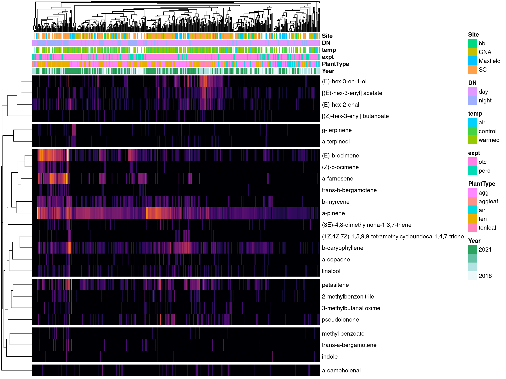
set.seed(1)
nmds.vol <- metaMDS(sqrt(vol.pruned), dist="bray", autotransform = FALSE, trace=F, trymax=3)
ordiplot(nmds.vol, type = "n")
text(nmds.vol, display="species", cex=0.7, col="grey20")
points(nmds.vol, display="sites", col=metadata$type, pch=as.integer(factor(metadata$Year)))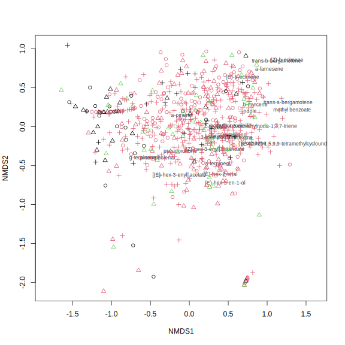
best <- list()
i <- 1
vol.left <- vol^(1/4) # halfway between areas and presence-absence
while(ncol(vol.left)>0) {
print(dim(vol.left))
best[[i]] <- which.max(rowSums(vol.left))
vol.left <- vol.left[ , !decostand(vol.left[best[[i]],], method="pa"), drop=FALSE]
i <- i+1
}
best.vol <- as.data.frame(t(vol[unlist(best),])) %>% rownames_to_column("name")
#get quant.ratios from ipo_gc.R
full_join(quant.ratios %>% mutate(name = shortnames[Name]), full_join(RT.year, best.vol)) %>% relocate(name) %>%
write_tsv("data/volatiles/quant_RT_ratios.tsv")All filtered samples
Flower heatmap
#cairo_pdf("ipo_heatmap.pdf", width=12, height=12)
ph <- pheatmap(as.matrix(t(decostand(vol, method="max")))^(1/3),
cluster_cols=T, show_colnames=F,
clustering_method="mcquitty", clustering_distance_rows="correlation",
clustering_distance_cols=vegdist(decostand(vol, method="max"), method = "bray"),
clustering_callback = function(hc, ...){dendsort(hc, type="average")},
scale="none", color=inferno(512),
annotation_col = data.frame(svf %>% select("Year", "PlantType", "expt", "Treat","DN","Site"), row.names=rownames(vol)),
fontsize = 10, border_color = NA, legend=F, annotation_legend=T, cutree_rows=6
)#dev.off()Flower NMDS
set.seed(1)
nmds.vol <- metaMDS(sqrt(vol), dist="bray", autotransform = FALSE, trace=F, trymax=3)
TEY <- with(svf, factor(paste(PlantType,expt,Year)))
TEYcols <- brewer.pal(9, "Paired")#[c(1:4,8,5:6)]
spcols <- c(agg="red", ten="violet")
ordiplot(nmds.vol, type = "n")
text(nmds.vol, display="species", cex=0.7, col="grey20")
legend("topleft", levels(svf$DN), pch=c(1,4))
#legend("topright", levels(svf$PlantType), fill=spcols)
legend("bottomright", levels(svf$Year), fill=1:3)
#legend("bottomleft", levels(TEY), fill=TEYcols, cex=0.9)
#points(nmds.vol, display="sites", col=TEYcols[TEY], pch=c(13,19)[svf$DN])
#points(nmds.vol, display="sites", col=spcols[svf$PlantType], pch=c(13,19)[svf$DN])
points(nmds.vol, display="sites", col=svf$Year, pch=c(1,4)[svf$DN])
#points(nmds.vol, display="sites", col=viridis(100)[sqrt(rowSums(vol))/100], pch=19)Average composition
relamounts <- svf %>% select(expt, PlantType, DN) %>%
bind_cols(decostand(vol, method="tot")) %>% pivot_longer(all_of(colnames(vol))) %>%
group_by(expt, PlantType, DN, name) %>%
summarize(mean=mean(value), se=sd(value)/sqrt(n())) %>% arrange(expt, PlantType, DN, desc(mean))
ggplot(relamounts, aes(y=fct_reorder(name, mean, base::mean), x=mean, color=paste(PlantType, expt), shape=DN))+
geom_pointrange(aes(xmin=mean-se, xmax=mean+se), position=position_dodge2(width=0.4)) +
scale_shape_manual(values=c(1,19)) + scale_x_sqrt(expand=c(0,0), labels=scales::percent_format())+
labs(x="Mean percentage",y="",color="Species", shape="Time")+
scale_color_manual(values=c("orange","red","cyan","blue")) + theme_dark()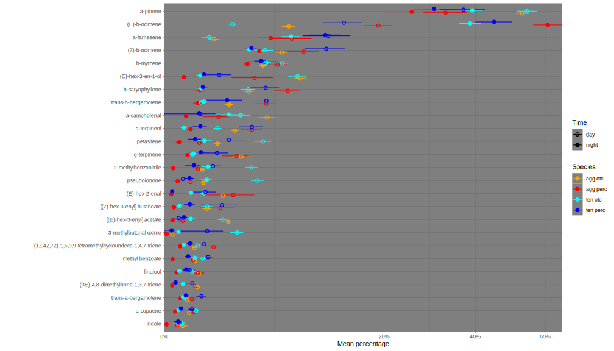
relamounts %>% slice_head(n=6) %>% filter(expt=="otc") %>% kable(digits=3)| expt | PlantType | DN | name | mean | se |
|---|---|---|---|---|---|
| otc | agg | day | a-pinene | 0.530 | 0.019 |
| otc | agg | day | (E)-hex-3-en-1-ol | 0.077 | 0.007 |
| otc | agg | day | (E)-b-ocimene | 0.064 | 0.007 |
| otc | agg | day | (Z)-b-ocimene | 0.057 | 0.006 |
| otc | agg | day | a-campholenal | 0.044 | 0.007 |
| otc | agg | day | b-myrcene | 0.040 | 0.003 |
| otc | ten | day | a-pinene | 0.544 | 0.030 |
| otc | ten | day | (E)-hex-3-en-1-ol | 0.073 | 0.011 |
| otc | ten | day | b-myrcene | 0.058 | 0.006 |
| otc | ten | day | (Z)-b-ocimene | 0.042 | 0.008 |
| otc | ten | day | petasitene | 0.040 | 0.007 |
| otc | ten | day | pseudoionone | 0.036 | 0.005 |
| otc | ten | night | a-pinene | 0.393 | 0.027 |
| otc | ten | night | (E)-b-ocimene | 0.387 | 0.027 |
| otc | ten | night | a-farnesene | 0.066 | 0.010 |
| otc | ten | night | b-myrcene | 0.043 | 0.004 |
| otc | ten | night | (Z)-b-ocimene | 0.030 | 0.002 |
| otc | ten | night | a-campholenal | 0.017 | 0.010 |
absamounts <- svf %>% select(expt, PlantType, DN) %>%
bind_cols(vol) %>% pivot_longer(all_of(colnames(vol))) %>%
group_by(expt, PlantType, DN, name) %>%
summarize(mean=mean(value), se=sd(value)/sqrt(n())) %>% arrange(expt, PlantType, DN, desc(mean))
ggplot(absamounts, aes(y=fct_reorder(name, mean, base::mean), x=mean, color=paste(PlantType, expt), shape=DN))+
geom_pointrange(aes(xmin=mean-se, xmax=mean+se), position=position_dodge2(width=0.4)) +
scale_shape_manual(values=c(1,19)) + scale_x_sqrt(expand=c(0,0))+
labs(x="Mean nanograms per hour",y="",color="Species, experiment", shape="Time")+
scale_color_manual(values=c("orange","red","cyan","blue")) + theme_dark()absamounts %>% pivot_wider(names_from=DN, values_from=c(mean, se)) %>%
ggplot(aes(x=mean_day, y=mean_night)) +
geom_path(aes(group=name), color="grey") + geom_text(aes(label=name, color=paste(expt, PlantType))) +
scale_x_log10() + scale_y_log10() + geom_abline(slope=1, intercept=0) + scale_color_manual(values=c(NA,"cornflowerblue","red","blue"))absamounts %>% pivot_wider(names_from=DN, values_from=c(mean, se)) %>% drop_na(mean_night) %>%
mutate(dn_ratio = mean_night/mean_day, exptPlantType=paste(expt, PlantType, sep="_")) %>%
ungroup() %>% select(name, exptPlantType, dn_ratio, mean_night) %>%
pivot_wider(names_from=exptPlantType, values_from=c(mean_night,dn_ratio)) %>% arrange(desc(`mean_night_otc_ten`)) %>% kable(digits=1)| name | mean_night_otc_ten | mean_night_perc_agg | mean_night_perc_ten | dn_ratio_otc_ten | dn_ratio_perc_agg | dn_ratio_perc_ten |
|---|---|---|---|---|---|---|
| (E)-b-ocimene | 255.1 | 355.9 | 214.5 | 81.7 | 29.7 | 14.4 |
| a-pinene | 203.1 | 113.7 | 60.2 | 1.8 | 3.4 | 2.7 |
| a-farnesene | 34.9 | 28.2 | 27.0 | 30.6 | 7.0 | 2.9 |
| b-myrcene | 24.5 | 16.7 | 10.0 | 1.8 | 4.7 | 2.6 |
| (Z)-b-ocimene | 17.4 | 22.1 | 13.1 | 5.2 | 3.2 | 1.8 |
| petasitene | 3.4 | 0.5 | 0.4 | 0.4 | 0.9 | 0.4 |
| a-campholenal | 3.2 | 0.9 | 1.0 | 1.1 | 1.8 | 4.3 |
| (E)-hex-3-en-1-ol | 3.0 | 0.9 | 0.6 | 0.1 | 0.2 | 0.7 |
| b-caryophyllene | 2.7 | 3.9 | 1.1 | 0.3 | 0.8 | 0.3 |
| 2-methylbenzonitrile | 2.4 | 0.1 | 0.3 | 0.5 | 0.5 | 0.8 |
| trans-b-bergamotene | 1.9 | 1.6 | 1.7 | 3.1 | 0.6 | 0.7 |
| methyl benzoate | 1.8 | 0.1 | 0.2 | 2.7 | 0.4 | 0.6 |
| (E)-hex-2-enal | 1.6 | 0.1 | 0.1 | 1.0 | 0.0 | 0.1 |
| [(E)-hex-3-enyl] acetate | 1.5 | 0.1 | 0.2 | 0.6 | 0.5 | 1.2 |
| pseudoionone | 1.1 | 0.2 | 0.2 | 0.2 | 1.1 | 2.9 |
| g-terpinene | 1.0 | 0.8 | 0.7 | 2.0 | 0.6 | 1.0 |
| (1Z,4Z,7Z)-1,5,9,9-tetramethylcycloundeca-1,4,7-triene | 0.8 | 0.7 | 0.5 | 0.5 | 0.8 | 0.9 |
| trans-a-bergamotene | 0.8 | 0.7 | 0.6 | 2.9 | 3.4 | 1.4 |
| (3E)-4,8-dimethylnona-1,3,7-triene | 0.7 | 0.1 | 0.1 | 0.8 | 0.4 | 0.4 |
| indole | 0.7 | 0.0 | 0.1 | 6.3 | 0.2 | 1.2 |
| a-terpineol | 0.6 | 1.3 | 0.6 | 0.2 | 0.5 | 0.3 |
| [(Z)-hex-3-enyl] butanoate | 0.4 | 0.2 | 0.2 | 0.2 | 0.2 | 0.2 |
| linalool | 0.4 | 0.4 | 0.3 | 0.9 | 1.9 | 1.6 |
| 3-methylbutanal oxime | 0.4 | 0.0 | 0.0 | 0.1 | 0.7 | 0.0 |
| a-copaene | 0.3 | 0.2 | 0.1 | 0.4 | 0.9 | 0.6 |
freqamounts <- svf %>% select(expt, PlantType, DN) %>%
bind_cols(decostand(vol, method="pa")) %>% pivot_longer(all_of(colnames(vol))) %>%
group_by(expt, PlantType, DN, name) %>%
summarize(mean=mean(value), se=sd(value)/sqrt(n())) %>% arrange(expt, PlantType, DN, desc(mean))
ggplot(freqamounts, aes(y=fct_reorder(name, mean, base::mean), x=mean, color=paste(PlantType, expt), shape=DN))+
geom_pointrange(aes(xmin=mean-se, xmax=mean+se), position=position_dodge2(width=0.4)) +
scale_shape_manual(values=c(1,19)) + scale_x_continuous(expand=c(0,0))+
labs(x="Frequency of detection",y="",color="Species, experiment", shape="Time")+
scale_color_manual(values=c("orange","red","cyan","blue")) + theme_dark()Compare to Bischoff et al. 2014
b14 <- read_tsv("data/volatiles/bischoff14_comparison.xlsx - S1B.tsv")
b14.long <- b14 %>% pivot_longer(contains("."), names_to="group") %>%
separate(group, c("species","site","DN","meanse")) %>%
pivot_wider(names_from = meanse)
ggplot(b14.long, aes(y=fct_reorder(name, mean, base::mean), x=mean, xmin=mean-se, xmax=mean+se, color=paste(species,site), shape=DN))+
geom_pointrange(position=position_dodge2(width=0.9)) + scale_x_sqrt(expand=c(0,0)) + scale_shape_manual(values=c(1,19)) +
scale_color_manual(values=c("orange","red","pink","cyan","blue")) + theme_dark()b14.long %>% pivot_wider(names_from=DN, values_from=c(mean, se)) %>%
ggplot(aes(x=sqrt(mean_day), y=sqrt(mean_night))) +
geom_path(aes(group=paste(name, species)), color="grey") + geom_text(aes(label=name, color=paste(species, site))) +
scale_x_sqrt() + scale_y_sqrt() + geom_abline(slope=1, intercept=0) +
scale_color_manual(values=c("orange","red","pink","cyan","blue")) + theme_dark()OTCs vs. Ambient
Inventory
svf %>% filter(expt=="otc") %>% count(PlantType, DN, temp,Year, Site, is.na(mean_temp_C_treatment)) %>%
pivot_wider(names_from=temp, values_from=n) %>% kable(caption="Sample size")| PlantType | DN | Year | Site | is.na(mean_temp_C_treatment) | control | warmed |
|---|---|---|---|---|---|---|
| agg | day | 2018 | GNA | FALSE | 16 | 29 |
| agg | day | 2018 | bb | TRUE | 13 | 13 |
| agg | day | 2019 | GNA | FALSE | 7 | 7 |
| agg | day | 2019 | GNA | TRUE | 3 | 4 |
| agg | day | 2021 | GNA | FALSE | 26 | 30 |
| agg | day | 2021 | Maxfield | FALSE | 38 | 43 |
| ten | day | 2019 | SC | FALSE | 10 | 11 |
| ten | day | 2021 | SC | FALSE | 30 | 41 |
| ten | night | 2019 | SC | FALSE | 8 | 9 |
| ten | night | 2021 | SC | FALSE | 27 | 39 |
samplesperplant <- svf %>% filter(Expt=="otc") %>% count(PlantType, DN, temp, Year, Site, PlantID)
samplesperplant %>% count(PlantType, DN, Year, Site, temp) %>% pivot_wider(names_from=temp, values_from=n) %>% kable(caption="Number of plants")| PlantType | DN | Year | Site | control | warmed |
|---|---|---|---|---|---|
| agg | day | 2018 | GNA | 16 | 28 |
| agg | day | 2018 | bb | 13 | 13 |
| agg | day | 2019 | GNA | 10 | 11 |
| agg | day | 2021 | GNA | 18 | 18 |
| agg | day | 2021 | Maxfield | 26 | 27 |
| ten | day | 2019 | SC | 10 | 11 |
| ten | day | 2021 | SC | 16 | 24 |
| ten | night | 2019 | SC | 8 | 9 |
| ten | night | 2021 | SC | 16 | 25 |
samplesperplant %>% count(PlantType, DN, Year, Site, n) %>% kable(caption="Sample size per plant")| PlantType | DN | Year | Site | n | nn |
|---|---|---|---|---|---|
| agg | day | 2018 | GNA | 1 | 43 |
| agg | day | 2018 | GNA | 2 | 1 |
| agg | day | 2018 | bb | 1 | 26 |
| agg | day | 2019 | GNA | 1 | 21 |
| agg | day | 2021 | GNA | 1 | 16 |
| agg | day | 2021 | GNA | 2 | 20 |
| agg | day | 2021 | Maxfield | 1 | 27 |
| agg | day | 2021 | Maxfield | 2 | 24 |
| agg | day | 2021 | Maxfield | 3 | 2 |
| ten | day | 2019 | SC | 1 | 21 |
| ten | day | 2021 | SC | 1 | 9 |
| ten | day | 2021 | SC | 2 | 31 |
| ten | night | 2019 | SC | 1 | 17 |
| ten | night | 2021 | SC | 1 | 19 |
| ten | night | 2021 | SC | 2 | 19 |
| ten | night | 2021 | SC | 3 | 3 |
samplesperplant %>% ggplot(aes(x=n, fill=Site)) + facet_grid(Site ~ Year) + geom_histogram(binwidth=1) +
stat_bin(aes(label=stat(count)), y=3, geom="text", binwidth=1) + guides(fill="none") + theme_minimal()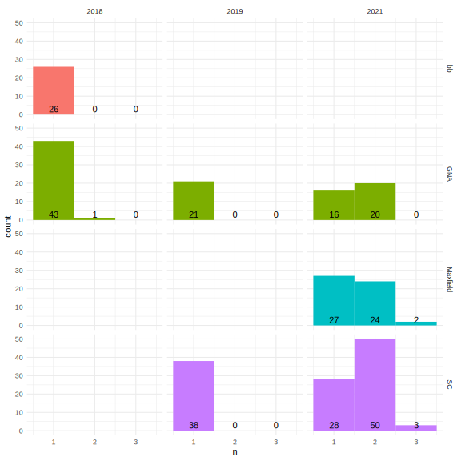
ggplot(svf %>% filter(Expt=="otc") %>% mutate(site=paste(Site,DN))) + facet_wrap(vars(Year), ncol=1)+
geom_bar(aes(x=yday(date), color=site, fill=site)) +
geom_vline(data=read_csv("./data/CWu OTC Hobos - duration.csv") %>%
mutate(begin=OTC_start-days(1), end=OTC_end+days(1), #start/end were trimmed 1 day for hobos
Year=year, site=paste(site,"day"), .keep="unused"),
aes(xintercept=yday(begin), color=site), size=1, linetype=2)+
theme_minimal() + labs(x="Day of year", y="Number of floral volatile samples", color="Site", fill="Site")
plot.otc <- function(svf.otc, cap.terms=c("mean_temp_C_treatment", "temp"), plot.chems=T) {
vol.otc <- vol[svf.otc$sample,]
cap.formula <- reformulate(cap.terms, response = "sqrt(vol.otc)")
cap.otc <- capscale(cap.formula, distance="bray", data=svf.otc)
summ.cap <- summary(cap.otc)
prop.expl <- summ.cap$cont$importance
ax.labs <- paste0(colnames(prop.expl)[1:2], " (",round(100*prop.expl[2,1:2]),"% explained)")
cap.terms.int <- str_subset(cap.terms, ":")
anova.cap <- anova(cap.otc, by=ifelse(length(cap.terms.int)>0, "term", "margin"))
plot(cap.otc, type="n", xlim=range(cap.otc$CCA$wa[,1]), xlab=ax.labs[1], ylab=ax.labs[2])
with(svf.otc,
title(main=paste("OTC warming:","I.",unique(PlantType), "at", paste(unique(Site), collapse=" & "),unique(Year),
do.call(paste0, list(unique(DN), collapse="/")), "n =",nrow(svf.otc))))
if("temp" %in% cap.terms) legend("topleft", title=paste("Treatment","\nP =",anova.cap["temp","Pr(>F)"]),
levels(svf.otc$temp), fill=tempcol)
if("DN" %in% cap.terms) legend("topright", title=paste("Time","\nP =",anova.cap["DN","Pr(>F)"]),
levels(svf.otc$DN), pch=c(1,19))
if(length(cap.terms.int)>0) legend("bottomleft", title= paste("Interaction\nP =", anova.cap[cap.terms.int,"Pr(>F)"]), legend="")
temprange <- round(c(max(svf.otc$mean_temp_C_treatment), min(svf.otc$mean_temp_C_treatment)))
if("mean_temp_C_treatment" %in% cap.terms) legend("bottomleft",
title=paste("Temperature","\nP =",anova.cap["mean_temp_C_treatment","Pr(>F)"]),
paste(temprange, " C"), fill=rev(viridis(2)))
if("Site" %in% cap.terms) legend("bottomright", title=paste("Site","\nP =",anova.cap["Site","Pr(>F)"]),
unique(svf.otc$Site))
ordispider(cap.otc, with(svf.otc, paste(Year, Site, temp, PlantID)), col="grey80")
points(cap.otc, display="sites", col=c(tempcol)[svf.otc$temp], pch=c(1,19)[svf.otc$DN])
text(cap.otc, display="cn")
if(plot.chems) {
if(length(cap.terms)>1) text(cap.otc, display="species", cex=0.8, srt=45,
col=ifelse(sqrt(cap.otc$CCA$v[,1]^2 + cap.otc$CCA$v[,2]^2)>0.25, alpha("purple",1),alpha("purple",0)))
else text(cap.otc, display="species", cex=0.8, srt=45,
col=ifelse(abs(cap.otc$CCA$v[,1])>0.1, alpha("purple",1),alpha("purple",0)))
}
return(cap.otc)
}
plot.terms <-c("mean_temp_C_treatment", "temp")CAP of I. aggregata
Each year and site
cap.siteyr.agg <- svf %>% filter(expt=="otc", PlantType=="agg") %>%
drop_na(mean_temp_C_treatment) %>%
group_by(Site, Year) %>% summarize(meta = list(cur_data_all()), .groups = "drop") %>%
arrange(Site, Year) %>% #nest that keeps groups
mutate(samples = map_int(meta, nrow),
cap = map(meta, plot.otc),
anova = map(cap, ~tidy(anova(.x, by="margin"))))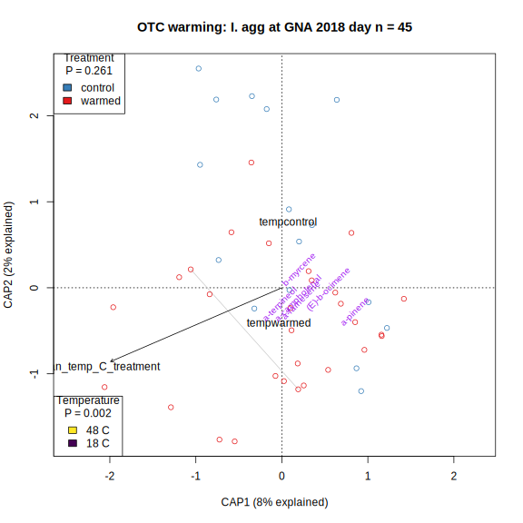 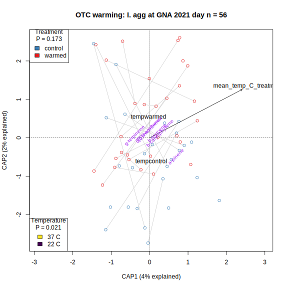
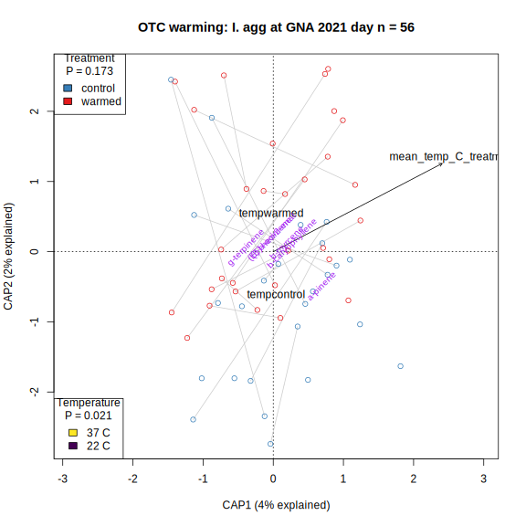
cap.siteyr.agg %>% select(-c(meta,cap)) %>% unnest(anova) %>%
filter(term!="Residual") %>% select(-c(df, SumOfSqs,statistic)) %>%
pivot_wider(names_from=term, values_from=p.value) %>%
rename(N=samples, Temperature=mean_temp_C_treatment, Treatment=temp) %>%
kable(caption="I. aggregata site-year CAP p-values")| Site | Year | N | Temperature | Treatment |
|---|---|---|---|---|
| GNA | 2018 | 45 | 0.001 | 0.298 |
| GNA | 2019 | 14 | 0.430 | 0.717 |
| GNA | 2021 | 56 | 0.017 | 0.172 |
| Maxfield | 2021 | 81 | 0.001 | 0.013 |
2021 both sites
cap.yr.agg <- svf %>% filter(expt=="otc", PlantType=="agg", year == "2021") %>%
drop_na(mean_temp_C_treatment) %>%
group_by(Year) %>% summarize(meta = list(cur_data_all()), .groups = "drop") %>%
mutate(samples = map_int(meta, nrow),
cap = map(meta, plot.otc, cap.terms=c(plot.terms, "Site")),
anova = map(cap, ~tidy(anova(.x, by="margin"))))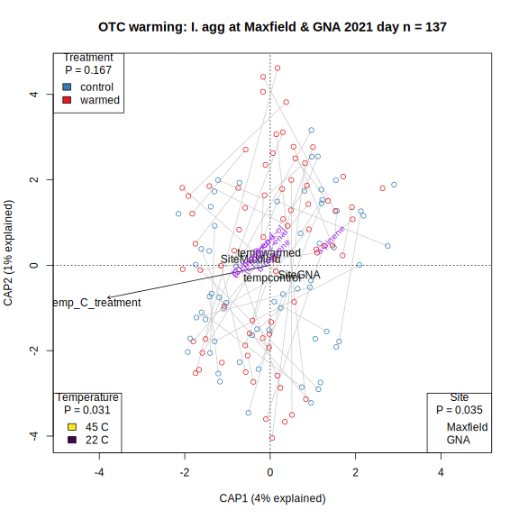
cap.yr.agg %>% select(-c(meta,cap)) %>% unnest(anova) %>%
filter(term!="Residual") %>% select(-c(df, SumOfSqs,statistic)) %>%
pivot_wider(names_from=term, values_from=p.value) %>%
rename(N=samples, Temperature=mean_temp_C_treatment, Treatment=temp) %>%
kable(caption="I. aggregata year CAP p-values")| Year | N | Temperature | Treatment | Site |
|---|---|---|---|---|
| 2021 | 137 | 0.031 | 0.189 | 0.034 |
All years
svf.otc <- svf %>% filter(expt=="otc", PlantType=="agg", Site!="bb") %>% drop_na(mean_temp_C_treatment)
vol.otc <- vol[svf.otc$sample,]
(cap.otc.comb <- capscale(sqrt(vol.otc) ~ Year + mean_temp_C_treatment + temp + Site, distance="bray", data=svf.otc))Call: capscale(formula = sqrt(vol.otc) ~ Year + mean_temp_C_treatment +
temp + Site, data = svf.otc, distance = "bray")
Inertia Proportion Rank
Total 27.2034 1.0000
Constrained 3.9638 0.1457 5
Unconstrained 30.9955 1.1394 70
Imaginary -7.7558 -0.2851 125
Inertia is squared Bray distance
Species scores projected from 'sqrt' 'vol.otc'
Eigenvalues for constrained axes:
CAP1 CAP2 CAP3 CAP4 CAP5
1.9308 1.0530 0.6153 0.2320 0.1327
Eigenvalues for unconstrained axes:
MDS1 MDS2 MDS3 MDS4 MDS5 MDS6 MDS7 MDS8
6.483 3.885 2.124 1.764 1.522 1.360 1.248 1.024
(Showing 8 of 70 unconstrained eigenvalues)anova(cap.otc.comb, by="margin") %>% kable(caption="CAP")| Df | SumOfSqs | F | Pr(>F) | |
|---|---|---|---|---|
| Year | 2 | 1.7938852 | 5.498188 | 0.001 |
| mean_temp_C_treatment | 1 | 0.5762340 | 3.532269 | 0.002 |
| temp | 1 | 0.3368438 | 2.064826 | 0.027 |
| Site | 1 | 0.4224414 | 2.589533 | 0.004 |
| Residual | 190 | 30.9955012 | NA | NA |
prop.expl <- summary(cap.otc.comb)$cont$importance
ax.labs <- paste0(colnames(prop.expl)[1:2], " (",round(100*prop.expl[2,1:2]),"% explained)")
cap.df <- fortify(cap.otc.comb)
arrowvars <- c(Temp="mean_temp_C_treatment", Warming="tempwarmed")
ggplot(mapping=aes(x=CAP1, y=CAP2, label=Label)) +
geom_path(data=cap.df %>% filter(Score=="sites") %>% bind_cols(svf.otc), aes(group=paste(Year, Site, temp, PlantID)), color="grey60")+
geom_point(data=cap.df %>% filter(Score=="sites") %>% bind_cols(svf.otc), aes(shape=Year, color=mean_temp_C_treatment), size=3)+
geom_segment(data=cap.df %>% filter(Score=="biplot", Label %in% arrowvars), aes(x=0,y=0,xend=CAP1*3.5, yend=CAP2*3.5),
arrow=arrow(length=unit(0.5, "lines")), color="white")+
geom_text(data=cap.df %>% filter(Score=="biplot", Label %in% arrowvars)%>% mutate(Label=names(arrowvars)),
aes(x=CAP1*3.6, y=CAP2*3.6, angle=atan(CAP2/CAP1)*180/pi, hjust=c(1,1)), fontface="bold", color="white", size=4) +
geom_text(data=cap.df %>% filter(Score=="centroids") %>% mutate(Label=c("2018","2019","2021","","","GNA","Maxfield")),
aes(x=CAP1, y=CAP2), fontface="bold", color="white", size=4) +
geom_text_repel(data=cap.df %>% left_join(ipochems, by=c("Label"="name")) %>% mutate(Label=greekify(Label)) %>%
filter(Score=="species", sqrt(CAP1^2+CAP2^2)>0.2),
aes(x=CAP1*1.5, y=CAP2*1.5), size=4, color="black", point.size=NA, box.padding=0)+
scale_color_viridis_c("Temp (\u00B0C)", option="inferno", breaks=seq(0, 60, by=4)) +
scale_shape_manual(values=c(`2018`=15,`2019`=19,`2021`=17)) + labs(x=ax.labs[1], y=ax.labs[2])+
coord_fixed() + theme_bw() +
theme(panel.grid = element_blank(), panel.background = element_rect(fill="grey70"), axis.text = element_text(color="black"))
lmer(sqrt(Total) ~ Year + Site + temp + (1|PlantID), data = svf.otc) %>% anova %>% kable(caption="total emissions")| Sum Sq | Mean Sq | NumDF | DenDF | F value | Pr(>F) | |
|---|---|---|---|---|---|---|
| Year | 281.49262 | 140.74631 | 2 | 169.0906 | 5.3395933 | 0.0056406 |
| Site | 40.49657 | 40.49657 | 1 | 105.5449 | 1.5363473 | 0.2179113 |
| temp | 16.88378 | 16.88378 | 1 | 133.2994 | 0.6405318 | 0.4249423 |
CAP of I. tenuituba
Each year
cap.yr.ten <- svf %>% filter(expt=="otc", PlantType=="ten") %>%
group_by(Year) %>% summarize(meta = list(cur_data_all()), .groups = "drop") %>%
mutate(samples = map_int(meta, nrow),
cap = map(meta, plot.otc, cap.terms=c("DN","temp","DN:temp")),
anova = map(cap, ~tidy(anova(.x, by="term"))))

cap.yr.ten %>% select(-c(meta,cap)) %>% unnest(anova) %>%
filter(term!="Residual") %>% select(-c(df, SumOfSqs,statistic)) %>%
pivot_wider(names_from=term, values_from=p.value) %>%
rename(N=samples, Time=DN, Treatment=temp, "Time:Treatment"="DN:temp") %>%
kable(caption="I. tenuituba year CAP p-values")| Year | N | Time | Treatment | Time:Treatment |
|---|---|---|---|---|
| 2019 | 38 | 0.001 | 0.245 | 0.676 |
| 2021 | 137 | 0.001 | 0.115 | 0.175 |
Both years, day
svf.otc <- svf %>% filter(expt=="otc", PlantType=="ten", DN=="day") %>% drop_na(mean_temp_C_treatment)
vol.otc <- vol[svf.otc$sample,]
(cap.otc.comb <- capscale(sqrt(vol.otc) ~ Year + mean_temp_C_treatment + temp, distance="bray", data=svf.otc))Call: capscale(formula = sqrt(vol.otc) ~ Year + mean_temp_C_treatment +
temp, data = svf.otc, distance = "bray")
Inertia Proportion Rank
Total 10.5670 1.0000
Constrained 0.8211 0.0777 3
Unconstrained 11.9490 1.1308 42
Imaginary -2.2032 -0.2085 49
Inertia is squared Bray distance
Species scores projected from 'sqrt' 'vol.otc'
Eigenvalues for constrained axes:
CAP1 CAP2 CAP3
0.3427 0.2801 0.1983
Eigenvalues for unconstrained axes:
MDS1 MDS2 MDS3 MDS4 MDS5 MDS6 MDS7 MDS8
2.8778 2.2416 0.8531 0.6843 0.6489 0.4981 0.4287 0.4127
(Showing 8 of 42 unconstrained eigenvalues)anova(cap.otc.comb, by="margin") %>% kable(caption="CAP")| Df | SumOfSqs | F | Pr(>F) | |
|---|---|---|---|---|
| Year | 1 | 0.2963676 | 2.182631 | 0.024 |
| mean_temp_C_treatment | 1 | 0.2019649 | 1.487392 | 0.125 |
| temp | 1 | 0.2817359 | 2.074874 | 0.023 |
| Residual | 88 | 11.9490428 | NA | NA |
prop.expl <- summary(cap.otc.comb)$cont$importance
ax.labs <- paste0(colnames(prop.expl)[1:2], " (",round(100*prop.expl[2,1:2]),"% explained)")
cap.df <- fortify(cap.otc.comb)
ggplot(mapping=aes(x=CAP1, y=CAP2, label=Label)) +
geom_path(data=cap.df %>% filter(Score=="sites") %>% bind_cols(svf.otc), aes(group=paste(Year, Site, temp, PlantID)), color="grey60")+
geom_point(data=cap.df %>% filter(Score=="sites") %>% bind_cols(svf.otc), aes(shape=Year, color=mean_temp_C_treatment), size=3)+
geom_segment(data=cap.df %>% filter(Score=="biplot", Label %in% arrowvars), aes(x=0,y=0,xend=CAP1*2.5, yend=CAP2*2.5),
arrow=arrow(length=unit(0.5, "lines")), color="white")+
geom_text(data=cap.df %>% filter(Score=="biplot", Label %in% arrowvars) %>% mutate(Label=names(arrowvars)),
aes(x=CAP1*2.6, y=CAP2*2.6, angle=atan(CAP2/CAP1)*180/pi, hjust=c(1,1)), fontface="bold", color="white", size=4) +
geom_text(data=cap.df %>% filter(Score=="centroids") %>% mutate(Label=c("2019","2021","","")),
aes(x=CAP1, y=CAP2), fontface="bold", color="white", size=4) +
geom_text_repel(data=cap.df %>% left_join(ipochems, by=c("Label"="name")) %>% mutate(Label=greekify(Label)) %>%
filter(Score=="species", sqrt(CAP1^2+CAP2^2)>0.2),
aes(x=CAP1*4, y=CAP2*4), size=4, color="black", point.size=NA, box.padding=0)+
scale_color_viridis_c("Temp (\u00B0C)", option="inferno", breaks=seq(0, 60, by=4)) +
scale_shape_manual(values=c(`2018`=15,`2019`=19,`2021`=17)) + labs(x=ax.labs[1], y=ax.labs[2])+
coord_fixed() + theme_bw() +
theme(panel.grid = element_blank(), panel.background = element_rect(fill="grey70"), axis.text = element_text(color="black"))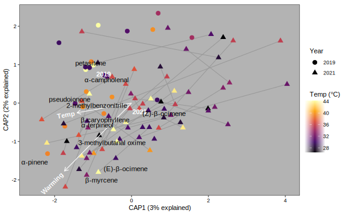
lmer(sqrt(Total) ~ Year + temp + (1|PlantID), data = svf.otc) %>% anova %>% kable(caption="total emissions")| Sum Sq | Mean Sq | NumDF | DenDF | F value | Pr(>F) | |
|---|---|---|---|---|---|---|
| Year | 2.085656 | 2.085656 | 1 | 89 | 0.0588173 | 0.8089332 |
| temp | 121.725944 | 121.725944 | 1 | 89 | 3.4327741 | 0.0672288 |
Both years, night
svf.otc <- svf %>% filter(expt=="otc", PlantType=="ten", DN=="night") %>% drop_na(mean_temp_C_treatment)
vol.otc <- vol[svf.otc$sample,]
(cap.otc.comb <- capscale(sqrt(vol.otc) ~ Year + mean_temp_C_treatment + temp, distance="bray", data=svf.otc))Call: capscale(formula = sqrt(vol.otc) ~ Year + mean_temp_C_treatment +
temp, data = svf.otc, distance = "bray")
Inertia Proportion Rank
Total 8.1751 1.0000
Constrained 1.0506 0.1285 3
Unconstrained 8.6221 1.0547 39
Imaginary -1.4976 -0.1832 43
Inertia is squared Bray distance
Species scores projected from 'sqrt' 'vol.otc'
Eigenvalues for constrained axes:
CAP1 CAP2 CAP3
0.8042 0.1522 0.0942
Eigenvalues for unconstrained axes:
MDS1 MDS2 MDS3 MDS4 MDS5 MDS6 MDS7 MDS8
2.5712 1.1655 0.7935 0.6989 0.4650 0.3663 0.3230 0.2672
(Showing 8 of 39 unconstrained eigenvalues)anova(cap.otc.comb, by="margin") %>% kable(caption="CAP")| Df | SumOfSqs | F | Pr(>F) | |
|---|---|---|---|---|
| Year | 1 | 0.7067920 | 6.475958 | 0.001 |
| mean_temp_C_treatment | 1 | 0.2675576 | 2.451487 | 0.011 |
| temp | 1 | 0.0999028 | 0.915356 | 0.468 |
| Residual | 79 | 8.6221330 | NA | NA |
prop.expl <- summary(cap.otc.comb)$cont$importance
ax.labs <- paste0(colnames(prop.expl)[1:2], " (",round(100*prop.expl[2,1:2]),"% explained)")
cap.df <- fortify(cap.otc.comb)
ggplot(mapping=aes(x=CAP1, y=CAP2, label=Label)) +
geom_path(data=cap.df %>% filter(Score=="sites") %>% bind_cols(svf.otc), aes(group=paste(Year, Site, temp, PlantID)), color="grey60")+
geom_point(data=cap.df %>% filter(Score=="sites") %>% bind_cols(svf.otc), aes(shape=Year, color=mean_temp_C_treatment), size=3)+
geom_segment(data=cap.df %>% filter(Score=="biplot", Label %in% arrowvars), aes(x=0,y=0,xend=CAP1*2.6, yend=CAP2*2.6),
arrow=arrow(length=unit(0.5, "lines")), color="white")+
geom_text(data=cap.df %>% filter(Score=="biplot", Label %in% arrowvars) %>% mutate(Label=names(arrowvars)),
aes(x=CAP1*2.7, y=CAP2*2.7, angle=atan(CAP2/CAP1)*180/pi, hjust=c(1,0)), fontface="bold", color="white", size=4) +
geom_text(data=cap.df %>% filter(Score=="centroids") %>% mutate(Label=c("2019","2021","","")),
aes(x=CAP1, y=CAP2), fontface="bold", color="white", size=4) +
geom_text_repel(data=cap.df %>% left_join(ipochems, by=c("Label"="name")) %>% mutate(Label=greekify(Label)) %>%
filter(Score=="species", sqrt(CAP1^2+CAP2^2)>0.2),
aes(x=CAP1*3, y=CAP2*3), size=4, color="black", point.size=NA, box.padding=0)+
scale_color_viridis_c("Temp (\u00B0C)", option="inferno", breaks=seq(0, 60, by=4)) +
scale_shape_manual(values=c(`2018`=15,`2019`=19,`2021`=17)) + labs(x=ax.labs[1], y=ax.labs[2])+
coord_fixed() + theme_bw() +
theme(panel.grid = element_blank(), panel.background = element_rect(fill="grey70"), axis.text = element_text(color="black"))
lmer(sqrt(Total) ~ Year + temp + (1|PlantID), data = svf.otc) %>% anova %>% kable(caption="total emissions")| Sum Sq | Mean Sq | NumDF | DenDF | F value | Pr(>F) | |
|---|---|---|---|---|---|---|
| Year | 369.873913 | 369.873913 | 1 | 64.44679 | 8.8065257 | 0.0042088 |
| temp | 1.536687 | 1.536687 | 1 | 56.52441 | 0.0365878 | 0.8489922 |
2021, night, VWC
svf.otc <- svf %>% filter(expt=="otc", PlantType=="ten", DN=="night") %>% drop_na(SoilVWC)
vol.otc <- vol[svf.otc$sample,]
(cap.otc.comb <- capscale(sqrt(vol.otc) ~ temp + SoilVWC, distance="bray", data=svf.otc))Call: capscale(formula = sqrt(vol.otc) ~ temp + SoilVWC, data =
svf.otc, distance = "bray")
Inertia Proportion Rank
Total 5.73117 1.00000
Constrained 0.18008 0.03142 2
Unconstrained 6.45276 1.12591 32
Imaginary -0.90167 -0.15733 31
Inertia is squared Bray distance
Species scores projected from 'sqrt' 'vol.otc'
Eigenvalues for constrained axes:
CAP1 CAP2
0.11400 0.06608
Eigenvalues for unconstrained axes:
MDS1 MDS2 MDS3 MDS4 MDS5 MDS6 MDS7 MDS8
2.1223 1.0715 0.6437 0.4589 0.3199 0.2502 0.2150 0.1865
(Showing 8 of 32 unconstrained eigenvalues)anova.cap <- anova(cap.otc.comb, by="margin")
kable(anova.cap, caption="CAP tenuituba night - treatment")| Df | SumOfSqs | F | Pr(>F) | |
|---|---|---|---|---|
| temp | 1 | 0.0878022 | 0.8300226 | 0.558 |
| SoilVWC | 1 | 0.1021512 | 0.9656685 | 0.431 |
| Residual | 61 | 6.4527576 | NA | NA |
svf.otc <- svf %>% filter(expt=="otc", PlantType=="ten", DN=="night") %>% drop_na(SoilVWC, mean_temp_C_treatment)
vol.otc <- vol[svf.otc$sample,]
(cap.otc.comb <- capscale(sqrt(vol.otc) ~ mean_temp_C_treatment + SoilVWC, distance="bray", data=svf.otc))Call: capscale(formula = sqrt(vol.otc) ~ mean_temp_C_treatment +
SoilVWC, data = svf.otc, distance = "bray")
Inertia Proportion Rank
Total 5.73117 1.00000
Constrained 0.29238 0.05102 2
Unconstrained 6.34046 1.10631 32
Imaginary -0.90167 -0.15733 31
Inertia is squared Bray distance
Species scores projected from 'sqrt' 'vol.otc'
Eigenvalues for constrained axes:
CAP1 CAP2
0.21094 0.08144
Eigenvalues for unconstrained axes:
MDS1 MDS2 MDS3 MDS4 MDS5 MDS6 MDS7 MDS8
1.9924 1.0961 0.6422 0.4585 0.3189 0.2374 0.2117 0.1873
(Showing 8 of 32 unconstrained eigenvalues)anova.cap <- anova(cap.otc.comb, by="margin")
kable(anova.cap, caption="CAP tenuituba night - temperature")| Df | SumOfSqs | F | Pr(>F) | |
|---|---|---|---|---|
| mean_temp_C_treatment | 1 | 0.2001035 | 1.9251472 | 0.081 |
| SoilVWC | 1 | 0.0893974 | 0.8600705 | 0.548 |
| Residual | 61 | 6.3404563 | NA | NA |
All years, day and night
svf.otc <- svf %>% filter(expt=="otc", PlantType=="ten")
vol.otc <- vol[svf.otc$sample,]
(cap.otc.comb <- capscale(sqrt(vol.otc) ~ Year * DN + temp, distance="bray", data=svf.otc))Call: capscale(formula = sqrt(vol.otc) ~ Year * DN + temp, data =
svf.otc, distance = "bray")
Inertia Proportion Rank
Total 23.0541 1.0000
Constrained 5.6324 0.2443 4
Unconstrained 23.5793 1.0228 66
Imaginary -6.1576 -0.2671 108
Inertia is squared Bray distance
Species scores projected from 'sqrt' 'vol.otc'
Eigenvalues for constrained axes:
CAP1 CAP2 CAP3 CAP4
4.464 0.708 0.299 0.161
Eigenvalues for unconstrained axes:
MDS1 MDS2 MDS3 MDS4 MDS5 MDS6 MDS7 MDS8
4.774 3.250 1.704 1.207 1.135 1.034 0.933 0.906
(Showing 8 of 66 unconstrained eigenvalues)anova(cap.otc.comb, by="term") %>% kable(caption="CAP")| Df | SumOfSqs | F | Pr(>F) | |
|---|---|---|---|---|
| Year | 1 | 0.5688480 | 4.101224 | 0.002 |
| DN | 1 | 4.2840308 | 30.886584 | 0.001 |
| temp | 1 | 0.2574265 | 1.855968 | 0.040 |
| Year:DN | 1 | 0.5220770 | 3.764019 | 0.001 |
| Residual | 170 | 23.5793391 | NA | NA |
prop.expl <- summary(cap.otc.comb)$cont$importance
ax.labs <- paste0(colnames(prop.expl)[1:2], " (",round(100*prop.expl[2,1:2]),"% explained)")
cap.df <- fortify(cap.otc.comb)
ggplot(mapping=aes(x=CAP1, y=CAP2, label=Label)) +
geom_path(data=cap.df %>% filter(Score=="sites") %>% bind_cols(svf.otc), aes(group=paste(Year, Site, temp, PlantID, week(date)), color=temp))+
geom_point(data=cap.df %>% filter(Score=="sites") %>% bind_cols(svf.otc), aes(shape=paste(Year,DN), color=temp), size=3)+
geom_segment(data=cap.df %>% filter(Score=="biplot"), aes(x=0,y=0,xend=CAP1*1.8, yend=CAP2*1.8),
arrow=arrow(length=unit(0.5, "lines")), color="white")+
geom_text(data=cap.df %>% filter(Score=="biplot") %>% mutate(Label=c("2021","Night","Warming","2021:night")),
aes(x=CAP1*1.9, y=CAP2*1.9, angle=atan(CAP2/CAP1)*180/pi, hjust=0), fontface="bold", color="white", size=5) +
geom_text_repel(data=cap.df %>% left_join(ipochems, by=c("Label"="name")) %>% filter(Score=="species", sqrt(CAP1^2+CAP2^2)>0.28),
aes(x=CAP1*0.8, y=CAP2*0.8), size=4, color="black", point.size=NA, box.padding=0)+ labs(x=ax.labs[1], y=ax.labs[2])+
scale_color_manual("Treatment", values=tempcol)+ scale_shape_manual("Year, time", values=c(0,15,1,19))+
coord_fixed() + theme_bw() + theme(panel.grid = element_blank(), panel.background = element_rect(fill="grey70"))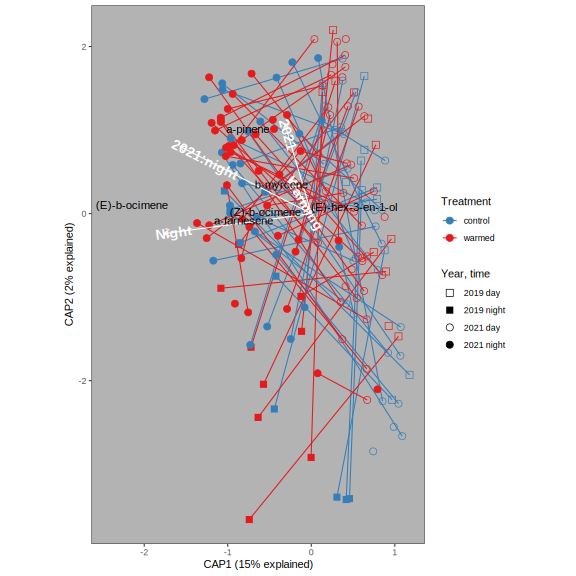
lmer(sqrt(Total) ~ Year * DN + temp + (1|PlantID), data = svf.otc) %>% anova %>% kable(caption="total emissions")| Sum Sq | Mean Sq | NumDF | DenDF | F value | Pr(>F) | |
|---|---|---|---|---|---|---|
| Year | 352.5422 | 352.5422 | 1 | 91.48272 | 6.6603027 | 0.0114495 |
| DN | 1111.1045 | 1111.1045 | 1 | 131.76273 | 20.9912255 | 0.0000106 |
| temp | 16.1388 | 16.1388 | 1 | 66.92548 | 0.3048976 | 0.5826676 |
| Year:DN | 452.3715 | 452.3715 | 1 | 131.76509 | 8.5463003 | 0.0040766 |
Both species, day
svf.otc <- svf %>% filter(expt=="otc", DN=="day", Site!="bb") %>% drop_na(mean_temp_C_treatment)
vol.otc <- vol[svf.otc$sample,]
(cap.otc.comb <- capscale(sqrt(vol.otc) ~ Year + Site + mean_temp_C_treatment + temp, distance="bray", data=svf.otc))Call: capscale(formula = sqrt(vol.otc) ~ Year + Site +
mean_temp_C_treatment + temp, data = svf.otc, distance = "bray")
Inertia Proportion Rank
Total 40.5715 1.0000
Constrained 6.6847 0.1648 6
Unconstrained 47.3336 1.1667 93
Imaginary -13.4467 -0.3314 194
Inertia is squared Bray distance
Species scores projected from 'sqrt' 'vol.otc'
Eigenvalues for constrained axes:
CAP1 CAP2 CAP3 CAP4 CAP5 CAP6
2.9692 1.8767 0.8744 0.5543 0.2491 0.1609
Eigenvalues for unconstrained axes:
MDS1 MDS2 MDS3 MDS4 MDS5 MDS6 MDS7 MDS8
8.806 6.393 3.122 2.301 2.156 1.996 1.690 1.424
(Showing 8 of 93 unconstrained eigenvalues)(anova.cap <- anova(cap.otc.comb, by="margin"))Permutation test for capscale under reduced model
Marginal effects of terms
Permutation: free
Number of permutations: 999
Model: capscale(formula = sqrt(vol.otc) ~ Year + Site + mean_temp_C_treatment + temp, data = svf.otc, distance = "bray")
Df SumOfSqs F Pr(>F)
Year 2 1.658 4.9207 0.001 ***
Site 2 3.165 9.3957 0.001 ***
mean_temp_C_treatment 1 0.506 3.0027 0.005 **
temp 1 0.515 3.0560 0.002 **
Residual 281 47.334
---
Signif. codes: 0 '***' 0.001 '**' 0.01 '*' 0.05 '.' 0.1 ' ' 1summ.cap <- summary(cap.otc.comb)
prop.expl <- summ.cap$cont$importance
ax.labs <- paste0(colnames(prop.expl)[1:2], " (",round(100*prop.expl[2,1:2]),"% explained)")
yearpch <- c(`2018`=15,`2019`=19,`2021`=17)
plot(cap.otc.comb, type="n", xlab=ax.labs[1], ylab=ax.labs[2])
title(paste("OTC warming: I. agg & ten at all sites, all years, day","n =", nrow(svf.otc)))
temprange <- round(c(max(svf.otc$mean_temp_C_treatment), min(svf.otc$mean_temp_C_treatment)))
legend("topleft", title=paste("Temperature","\nP =",anova.cap["mean_temp_C_treatment","Pr(>F)"]), legend=paste(temprange, " C"), fill=rev(viridis(2)))
legend("topright", title=paste("Year","\nP =",anova.cap["Year","Pr(>F)"]), levels(svf.otc$Year), pch=yearpch)
legend("bottomright", title=paste("Site","\nP =",anova.cap["Site","Pr(>F)"]), legend=unique(svf.otc$Site))
legend("bottomleft", title=paste("Treatment","\nP =",anova.cap["temp","Pr(>F)"]), levels(svf.otc$temp))
ordispider(cap.otc.comb, with(svf.otc, paste(Year, Site, temp, PlantID)), col="grey80")
points(cap.otc.comb, display="sites", col=inferno(round(temprange[1]-temprange[2])+1)[round(svf.otc$mean_temp_C_treatment-temprange[2])+1], pch=yearpch[svf.otc$Year])
text(cap.otc.comb, display="cn")
text(cap.otc.comb, display="species", cex=0.7, srt=45,
col=ifelse(sqrt(cap.otc.comb$CCA$v[,1]^2 + cap.otc.comb$CCA$v[,2]^2)>0.25, alpha("red",0.7),alpha("red",0)))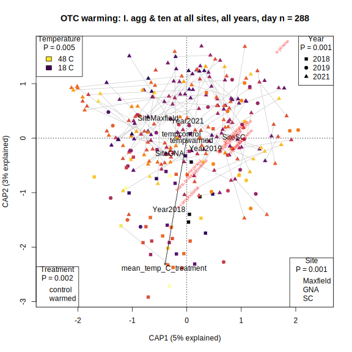
lmer(sqrt(Total) ~ Year + Site + temp + (1|PlantID), data = svf.otc) %>% anova %>% kable(caption="total emissions")| Sum Sq | Mean Sq | NumDF | DenDF | F value | Pr(>F) | |
|---|---|---|---|---|---|---|
| Year | 184.09739 | 92.04870 | 2 | 221.4682 | 3.049117 | 0.0493957 |
| Site | 479.81097 | 239.90549 | 2 | 177.4828 | 7.946879 | 0.0004950 |
| temp | 90.37225 | 90.37225 | 1 | 172.2215 | 2.993585 | 0.0853863 |
2021 by week
#Night, tenuituba
svf.otc <- svf %>% filter(expt=="otc", DN=="night", Year=="2021") %>%
mutate(sampround = factor(ifelse(yday(date)>200, "4wks", "2wks")))
vol.otc <- vol[svf.otc$sample,]
(cap.otc.comb <- capscale(sqrt(vol.otc) ~ sampround * temp, distance="bray", data=svf.otc))Call: capscale(formula = sqrt(vol.otc) ~ sampround * temp, data =
svf.otc, distance = "bray")
Inertia Proportion Rank
Total 5.78909 1.00000
Constrained 0.25680 0.04436 3
Unconstrained 6.46153 1.11616 32
Imaginary -0.92924 -0.16052 33
Inertia is squared Bray distance
Species scores projected from 'sqrt' 'vol.otc'
Eigenvalues for constrained axes:
CAP1 CAP2 CAP3
0.12821 0.08915 0.03944
Eigenvalues for unconstrained axes:
MDS1 MDS2 MDS3 MDS4 MDS5 MDS6 MDS7 MDS8
2.1351 1.0528 0.6389 0.4509 0.3280 0.2517 0.2140 0.1899
(Showing 8 of 32 unconstrained eigenvalues)anova.cap <- anova(cap.otc.comb, by="term")
kable(anova.cap, caption="CAP tenuituba 2021 night by week")| Df | SumOfSqs | F | Pr(>F) | |
|---|---|---|---|---|
| sampround | 1 | 0.1178795 | 1.1310826 | 0.283 |
| temp | 1 | 0.0732391 | 0.7027467 | 0.703 |
| sampround:temp | 1 | 0.0656847 | 0.6302607 | 0.760 |
| Residual | 62 | 6.4615344 | NA | NA |
#Day, both species
svf.otc <- svf %>% filter(expt=="otc", DN=="day", Year=="2021") %>%
mutate(sampround = factor(ifelse(yday(date)>200, "4wks", "2wks")))
vol.otc <- vol[svf.otc$sample,]
(cap.otc.comb <- capscale(sqrt(vol.otc) ~ Site + sampround * temp, distance="bray", data=svf.otc))Call: capscale(formula = sqrt(vol.otc) ~ Site + sampround * temp, data
= svf.otc, distance = "bray")
Inertia Proportion Rank
Total 29.2834 1.0000
Constrained 4.2305 0.1445 5
Unconstrained 33.1971 1.1336 76
Imaginary -8.1442 -0.2781 131
Inertia is squared Bray distance
Species scores projected from 'sqrt' 'vol.otc'
Eigenvalues for constrained axes:
CAP1 CAP2 CAP3 CAP4 CAP5
2.6636 0.8891 0.4469 0.1575 0.0735
Eigenvalues for unconstrained axes:
MDS1 MDS2 MDS3 MDS4 MDS5 MDS6 MDS7 MDS8
6.687 4.977 2.116 1.887 1.592 1.318 1.176 0.982
(Showing 8 of 76 unconstrained eigenvalues)anova.cap <- anova(cap.otc.comb, by="term")
kable(anova.cap, caption="CAP both species day by week")| Df | SumOfSqs | F | Pr(>F) | |
|---|---|---|---|---|
| Site | 2 | 2.9203108 | 8.8848622 | 0.001 |
| sampround | 1 | 0.9744600 | 5.9294668 | 0.001 |
| temp | 1 | 0.2410782 | 1.4669304 | 0.104 |
| sampround:temp | 1 | 0.0946858 | 0.5761511 | 0.920 |
| Residual | 202 | 33.1970703 | NA | NA |
(cap.otc.comb <- capscale(sqrt(vol.otc) ~ Site + sampround + temp, distance="bray", data=svf.otc))Call: capscale(formula = sqrt(vol.otc) ~ Site + sampround + temp, data
= svf.otc, distance = "bray")
Inertia Proportion Rank
Total 29.2834 1.0000
Constrained 4.1358 0.1412 4
Unconstrained 33.2918 1.1369 76
Imaginary -8.1442 -0.2781 131
Inertia is squared Bray distance
Species scores projected from 'sqrt' 'vol.otc'
Eigenvalues for constrained axes:
CAP1 CAP2 CAP3 CAP4
2.6620 0.8782 0.4383 0.1574
Eigenvalues for unconstrained axes:
MDS1 MDS2 MDS3 MDS4 MDS5 MDS6 MDS7 MDS8
6.691 4.984 2.118 1.888 1.596 1.328 1.178 0.983
(Showing 8 of 76 unconstrained eigenvalues)summ.cap <- summary(cap.otc.comb)
prop.expl <- summ.cap$cont$importance
ax.labs <- paste0(colnames(prop.expl)[1:2], " (",round(100*prop.expl[2,1:2]),"% explained)")
plot(cap.otc.comb, type="n", xlab=ax.labs[1], ylab=ax.labs[2])
title(paste("OTC warming, week: I. agg & ten at all sites, 2021, day","n =", nrow(svf.otc)))
legend("bottomright", title=paste("Site","\nP =",anova.cap["Site","Pr(>F)"]), legend=unique(svf.otc$Site))
legend("bottomleft", title=paste("Treatment","\nP =",anova.cap["temp","Pr(>F)"]), levels(svf.otc$temp))
legend("topleft", title=paste("Week","\nP =",anova.cap["sampround","Pr(>F)"]), levels(svf.otc$sampround), pch=c(1,2))
ordispider(cap.otc.comb, with(svf.otc, paste(Year, Site, temp, PlantID)), col="grey80")
points(cap.otc.comb, display="sites", col=tempcol[svf.otc$temp], pch=as.integer(svf.otc$sampround))
text(cap.otc.comb, display="cn")
text(cap.otc.comb, display="species", cex=0.7, srt=45,
col=ifelse(sqrt(cap.otc.comb$CCA$v[,1]^2 + cap.otc.comb$CCA$v[,2]^2)>0.25, alpha("purple",0.7),alpha("purple",0)))
Both species, VWC+temp, day
svf %>% mutate(hasVWC=!is.na(SoilVWC+mean_temp_C_treatment)) %>% filter(Expt=="otc")%>% count(Year, Site, DN, hasVWC) %>% pivot_wider(names_from=hasVWC, values_from=n) %>% kable(caption="VOC samples with soil moisture and temp")| Year | Site | DN | FALSE | TRUE |
|---|---|---|---|---|
| 2018 | GNA | day | 3 | 42 |
| 2018 | bb | day | 26 | NA |
| 2019 | GNA | day | 12 | 9 |
| 2019 | SC | day | 6 | 15 |
| 2019 | SC | night | 17 | NA |
| 2021 | GNA | day | NA | 56 |
| 2021 | Maxfield | day | NA | 81 |
| 2021 | SC | day | NA | 71 |
| 2021 | SC | night | 2 | 64 |
svf.otc <- svf %>% filter(expt=="otc", DN=="day", Site!="bb") %>% drop_na(SoilVWC, mean_temp_C_treatment)
vol.otc <- vol[svf.otc$sample,]
(cap.otc.comb <- capscale(sqrt(vol.otc) ~ Year + Site + SoilVWC + mean_temp_C_treatment, distance="bray", data=svf.otc))Call: capscale(formula = sqrt(vol.otc) ~ Year + Site + SoilVWC +
mean_temp_C_treatment, data = svf.otc, distance = "bray")
Inertia Proportion Rank
Total 38.8589 1.0000
Constrained 6.0436 0.1555 6
Unconstrained 45.3538 1.1671 91
Imaginary -12.5384 -0.3227 182
Inertia is squared Bray distance
Species scores projected from 'sqrt' 'vol.otc'
Eigenvalues for constrained axes:
CAP1 CAP2 CAP3 CAP4 CAP5 CAP6
2.6824 1.7610 0.9206 0.3734 0.1947 0.1115
Eigenvalues for unconstrained axes:
MDS1 MDS2 MDS3 MDS4 MDS5 MDS6 MDS7 MDS8
8.764 6.108 2.888 2.237 2.067 1.919 1.635 1.371
(Showing 8 of 91 unconstrained eigenvalues)anova.cap <- anova(cap.otc.comb, by="margin")
kable(anova.cap, caption="CAP both species, soil moisture and temperature")| Df | SumOfSqs | F | Pr(>F) | |
|---|---|---|---|---|
| Year | 2 | 1.437027 | 4.229927 | 0.001 |
| Site | 2 | 3.003845 | 8.841898 | 0.001 |
| SoilVWC | 1 | 0.219458 | 1.291961 | 0.179 |
| mean_temp_C_treatment | 1 | 0.349599 | 2.058108 | 0.022 |
| Residual | 267 | 45.353763 | NA | NA |
summ.cap <- summary(cap.otc.comb)
prop.expl <- summ.cap$cont$importance
ax.labs <- paste0(colnames(prop.expl)[1:2], " (",round(100*prop.expl[2,1:2]),"% explained)")
yearpch <- c(`2018`=15,`2019`=19,`2021`=17)
plot(cap.otc.comb, type="n", xlab=ax.labs[1], ylab=ax.labs[2])
title(paste("Soil moisture + temperature: I. agg & ten at all sites, all years","n =", nrow(svf.otc)))
VWCrange <- round(c(max(svf.otc$SoilVWC), min(svf.otc$SoilVWC)))
legend("left", title=paste("VWC","\nP =",anova.cap["SoilVWC","Pr(>F)"]), legend=paste(VWCrange, "%"), fill=rev(viridis(2)))
legend("topright", title=paste("Year","\nP =",anova.cap["Year","Pr(>F)"]), levels(svf.otc$Year), pch=yearpch)
legend("bottomleft", title=paste("Site","\nP =",anova.cap["Site","Pr(>F)"]), legend=unique(svf.otc$Site))
temprange <- round(c(max(svf.otc$mean_temp_C_treatment), min(svf.otc$mean_temp_C_treatment)))
legend("topleft", title=paste("Temperature","\nP =",anova.cap["mean_temp_C_treatment","Pr(>F)"]), legend=paste(temprange, " C"))
ordispider(cap.otc.comb, with(svf.otc, paste(Year, Site, temp, PlantID)), col="grey80")
points(cap.otc.comb, display="sites", col=viridis(round(VWCrange[1]-VWCrange[2])+1)[round(svf.otc$SoilVWC-VWCrange[2])+1], pch=yearpch[svf.otc$Year])
text(cap.otc.comb, display="cn")
text(cap.otc.comb, display="species", cex=0.7, srt=45,
col=ifelse(sqrt(cap.otc.comb$CCA$v[,1]^2 + cap.otc.comb$CCA$v[,2]^2)>0.25, alpha("red",1),alpha("red",0)))
ggplot(svf.otc, aes(x=mean_temp_C_treatment, y=SoilVWC))+ geom_point() + geom_smooth()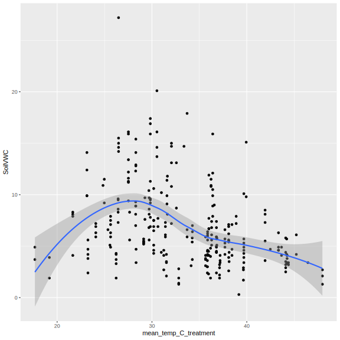
Selection gradients
Following method of Chong et al. 2018 for reconstructing selection estimates from estimates of selection on PCs: Beta = E * A.
minsamples <- 70
vol.top <- vol[,colSums(decostand(vol,"pa"))> minsamples]#occur in more than minsamples
sds <- read_csv("data/2021_Maxfield_sds.csv") %>%
mutate(prop_uninfested = 1 - prop_infested,
plant=as.character(plant))
fitnesstraits <- c("seeds_est", "seeds_per_flower", "prop_uninfested") #"eggs_per_flower"
fitnessnames <- set_names(c("Estimated total seeds", "Estimated seeds per flower", "Prop. nonaborted fruits uninfested"), fitnesstraits)
# Run PCA on traits
vols.PCA <- vol.top %>% mutate(across(everything(), ~ (.x-mean(.x, na.rm=T))/sd(.x, na.rm=T))) %>%
prcomp()
summary(vols.PCA) # PCs 1 - 5 explain 63% of the variation, #PCs total = top volatilesImportance of components:
PC1 PC2 PC3 PC4 PC5 PC6 PC7
Standard deviation 2.5103 1.732 1.48808 1.27189 1.16686 1.09452 1.00658
Proportion of Variance 0.2521 0.120 0.08858 0.06471 0.05446 0.04792 0.04053
Cumulative Proportion 0.2521 0.372 0.46060 0.52530 0.57977 0.62768 0.66821
PC8 PC9 PC10 PC11 PC12 PC13 PC14
Standard deviation 0.99142 0.9811 0.96619 0.91916 0.84912 0.80046 0.76465
Proportion of Variance 0.03932 0.0385 0.03734 0.03379 0.02884 0.02563 0.02339
Cumulative Proportion 0.70753 0.7460 0.78337 0.81717 0.84601 0.87164 0.89503
PC15 PC16 PC17 PC18 PC19 PC20 PC21
Standard deviation 0.70927 0.68848 0.6404 0.49617 0.48644 0.45613 0.42792
Proportion of Variance 0.02012 0.01896 0.0164 0.00985 0.00947 0.00832 0.00732
Cumulative Proportion 0.91515 0.93411 0.9505 0.96036 0.96982 0.97815 0.98547
PC22 PC23 PC24 PC25
Standard deviation 0.38147 0.31756 0.29491 0.1729
Proportion of Variance 0.00582 0.00403 0.00348 0.0012
Cumulative Proportion 0.99129 0.99533 0.99880 1.0000vols.PCA.E <- vols.PCA$rotation[,1:5] #min(4, ncol(vols.PCA$rotation))
calculate_beta <- function(E, slopes) {
data.frame(B = E %*% slopes$A,
SE = sqrt(E ^ 2 %*% slopes$SE ^ 2)) %>%
mutate(not_zero = abs(B) - SE > 0) %>%
rownames_to_column("trait")
}
selection_pca <- function(temp=c("control","warmed"), fitnesstrait = "seeds_est") {
vols.std.PCA <- svf %>% bind_cols(as.data.frame(vols.PCA$x)) %>%
filter(temp %in% .env$temp) %>%
mutate(plant=as.character(plant)) %>%
left_join(sds, by=c("plotid", "plant","temp")) %>%
select(all_of(fitnesstrait), "temp", starts_with("PC")) %>%
rename("fitness" = fitnesstrait) %>%
mutate(relfitness = fitness/mean(fitness, na.rm=T), .keep="unused") %>% ungroup %>%
drop_na(relfitness) %>%
select(where(~sum(is.na(.))==0))
# Regress relative fitness on PCs
vols.PCA.regression <- lm(relfitness ~ PC1 + PC2 + PC3 + PC4 + PC5, data = vols.std.PCA)
vols.PCA.slopes <- tidy(vols.PCA.regression) %>% filter(term != "(Intercept)") %>% rename(A=estimate, SE=std.error)
# Convert selection gradients on PCs to gradients on traits
calculate_beta(vols.PCA.E, vols.PCA.slopes)
}
plot_beta <- function(betas) {
bs <- betas %>% left_join(ipochems, by=c("trait"="name")) %>%
mutate(trait = fct_reorder(trait, map_dbl(vol.top[,trait], mean)))#order graph by mean emissions
ggplot(bs, aes(y=trait, x = B, xmin=B-SE, xmax=B+SE)) +
geom_vline(xintercept=0)+
geom_pointrange(aes(color=temp), position=position_dodge(width=0.5)) +
labs(x = "Selection gradient (beta) estimated from PCs", y = "", color="Temperature") +
scale_color_manual(values=tempcol) + theme_minimal() + #+ scale_x_continuous(limits=c(-0.55,0.55), n.breaks=10) +
theme(legend.position="bottom")
}
vols.beta.temp <- expand_grid(temp=c("control","warmed"), fitnesstrait=fitnesstraits) %>%
mutate(betas = pmap(., selection_pca)) %>% unnest(betas)
walk(fitnesstraits, ~print(plot_beta(filter(vols.beta.temp, fitnesstrait==.x)) + ggtitle(fitnessnames[.x])))
 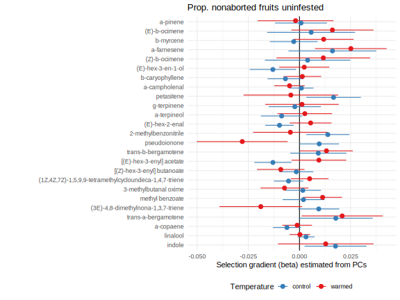
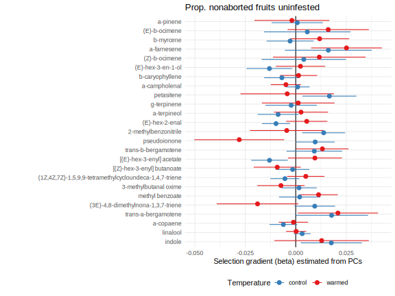
Percivals warm vs. cool
CAP analysis of each Percival dataset
#inventory of samples
svf %>% filter(expt=="perc") %>% count(PlantType, DN, Temp,Year) %>% kable(caption="Sample size")| PlantType | DN | Temp | Year | n |
|---|---|---|---|---|
| agg | day | cool | 2018 | 9 |
| agg | day | cool | 2019 | 5 |
| agg | day | warm | 2018 | 8 |
| agg | day | warm | 2019 | 5 |
| agg | night | cool | 2018 | 9 |
| agg | night | cool | 2019 | 4 |
| agg | night | warm | 2018 | 7 |
| agg | night | warm | 2019 | 5 |
| ten | day | cool | 2018 | 7 |
| ten | day | cool | 2019 | 6 |
| ten | day | warm | 2018 | 7 |
| ten | day | warm | 2019 | 4 |
| ten | night | cool | 2018 | 9 |
| ten | night | cool | 2019 | 5 |
| ten | night | warm | 2018 | 8 |
| ten | night | warm | 2019 | 5 |
plot.perc <- function(svf.perc, plot.chems=T) {
vol.perc <- vol[svf.perc$sample,]
cap.perc <- capscale(sqrt(vol.perc) ~ DN+Temp, distance="bray", data=svf.perc)
summ.cap <- summary(cap.perc)
prop.expl <- summ.cap$cont$importance[2,c("CAP1","CAP2")]
ax.labs <- paste0("CAP", 1:2, " (",round(100*prop.expl),"% explained)")
anova.cap <- anova(cap.perc, by="margin")
plot(cap.perc, type="n", xlim=range(cap.perc$CCA$wa[,1]), xlab=ax.labs[1], ylab=ax.labs[2])
with(svf.perc, title(paste0("Percivals: I. ", unique(PlantType)," in ", unique(Year), " n = ", nrow(svf.perc))))
#, " (",round(100*summ.cap$constr.chi / summ.cap$tot.chi),"% explained)")
legend("topleft", title=paste("Temperature","\nP =",anova.cap["Temp","Pr(>F)"]),
levels(svf.perc$Temp), fill=Tempcol)
legend("topright", title=paste("Time","\nP =",anova.cap["DN","Pr(>F)"]),
levels(svf.perc$DN), pch=c(1,19))
if(plot.chems) text(cap.perc, display="species", cex=0.7, srt=45,
col=ifelse(sqrt(cap.perc$CCA$v[,1]^2 + cap.perc$CCA$v[,2]^2)>0.25, alpha("purple",0.7),alpha("purple",0)))
ordispider(cap.perc, with(svf.perc, paste(Year, Temp, Sample2)), col="grey80")
points(cap.perc, display="sites", col=Tempcol[svf.perc$Temp], pch=c(1,19)[svf.perc$DN])
text(cap.perc, display="cn")
return(cap.perc)
}
cap.perc.agg18 <- plot.perc(svf %>% filter(expt=="perc",Year=="2018",PlantType=="agg"))
cap.perc.agg19 <- plot.perc(svf %>% filter(expt=="perc",Year=="2019",PlantType=="agg"))
cap.perc.ten18 <- plot.perc(svf %>% filter(expt=="perc",Year=="2018",PlantType=="ten"))
cap.perc.ten19 <- plot.perc(svf %>% filter(expt=="perc",Year=="2019",PlantType=="ten"))
#cap.perc.all <- list(agg18=cap.perc.agg18, agg19=cap.perc.agg19, ten18=cap.perc.ten18, ten19=cap.perc.ten19)
#lapply(cap.perc.all, anova, by="margin")CAP of Percival dataset combined for each species
plot.perc.comb <- function(svf.perc, plot.chems=F) {
vol.perc <- vol[svf.perc$sample,]
cap.perc.comb <- capscale(sqrt(vol.perc) ~ Year+DN+Temp, distance="bray", data=svf.perc)
summ.cap <- summary(cap.perc.comb)
prop.expl <- summ.cap$cont$importance[2,c("CAP1","CAP2")]
ax.labs <- paste0("CAP", 1:2, " (",round(100*prop.expl),"% explained)")
anova.cap <- anova(cap.perc.comb, by="margin")
plot(cap.perc.comb, type="n", xlim=range(cap.perc.comb$CCA$wa[,1]), xlab=ax.labs[1], ylab=ax.labs[2])
title(paste("Percivals: I.",unique(svf.perc$PlantType), "2018/2019","n =", nrow(svf.perc)))
legend("bottomleft", title=paste("Temperature","\nP =",anova.cap["Temp","Pr(>F)"]), levels(svf.perc$Temp), fill=Tempcol)
legend("bottomright", title=paste("Time","\nP =",anova.cap["DN","Pr(>F)"]), levels(svf.perc$DN), fil=c(0,1))
legend("topright", title=paste("Year","\nP =",anova.cap["Year","Pr(>F)"]), levels(svf.perc$Year), pch=c(19,15))
ordispider(cap.perc.comb, with(svf.perc, paste(Year, Temp, Sample2)), col="grey80")
points(cap.perc.comb, display="sites", col=Tempcol[svf.perc$Temp], pch=c(1,0,19,15)[factor(paste(svf.perc$DN, svf.perc$Year))])
text(cap.perc.comb, display="cn")
text(cap.perc.comb, display="species", cex=0.7, srt=45, col=ifelse(sqrt(cap.perc.comb$CCA$v[,1]^2 + cap.perc.comb$CCA$v[,2]^2)>0.2, alpha("purple",1),alpha("purple",0)))
return(cap.perc.comb)
}
svf.perc.agg <- plot.perc.comb(svf %>% filter(expt=="perc", PlantType=="agg"))
svf.perc.ten <- plot.perc.comb(svf %>% filter(expt=="perc", PlantType=="ten"))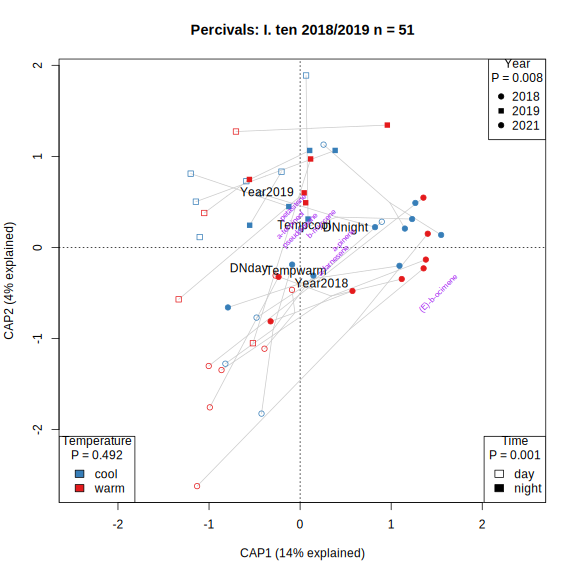
#svf.perc.both <- plot.perc.comb(svf %>% filter(expt=="perc"))Individual volatiles
Treatment effects
vols.plot <- chemsf %>% filter(filter_final, freq.floral>0.18) %>% arrange(desc(freq.floral)) %>% pull("name") %>% as.character
#%>%union(colnames(quant.scaled.vol))
#vols.plot[vols.plot=="b-caryophyllene"] <- "b-caryophyllene.1"#c("b-ocimene","a-pinene","a-farnesene","b-caryophyllene.1","petasitene","b-myrcene","longifolene","tridec-1-ene ","benzophenone")
vol.long <- gather(cbind(sample=rownames(vol[,vols.plot]), total=rowSums(vol), vol[,vols.plot]), key="chem",value="area", 2:(length(vols.plot)+2), factor_key=T)
vol.plot <- left_join(vol.long, svf) %>% mutate(chem=factor(chem, levels=c("total",vols.plot)))
specDNcols <- c( "#943390","#FF5056", "#A894FF","#FC8C97")
#Treatcols <- c("#DA9E18","#6B744F")
DNcols <- c("grey90","grey20")
ggplot(vol.plot %>% drop_na(PlantType, expt) %>% filter(expt=="otc", Site!="bb"),#TODO track down NAs
aes(x=paste(Site, Year),y=area, fill=DN, color=paste(Treat))) +
geom_boxplot(size=0.7, outlier.size=0.7, position=position_dodge2(preserve="total")) +
facet_wrap(vars(chem), scales="free_y") +
scale_y_sqrt("Emissions (ng/flower/hr)") +
scale_color_brewer("Treatment", palette = "Set1", direction=-1)+
scale_x_discrete("Site, year")+
scale_fill_manual("Time of day",values=DNcols) +
theme_minimal() + theme(axis.text.x=element_text(angle=20, vjust=0.5))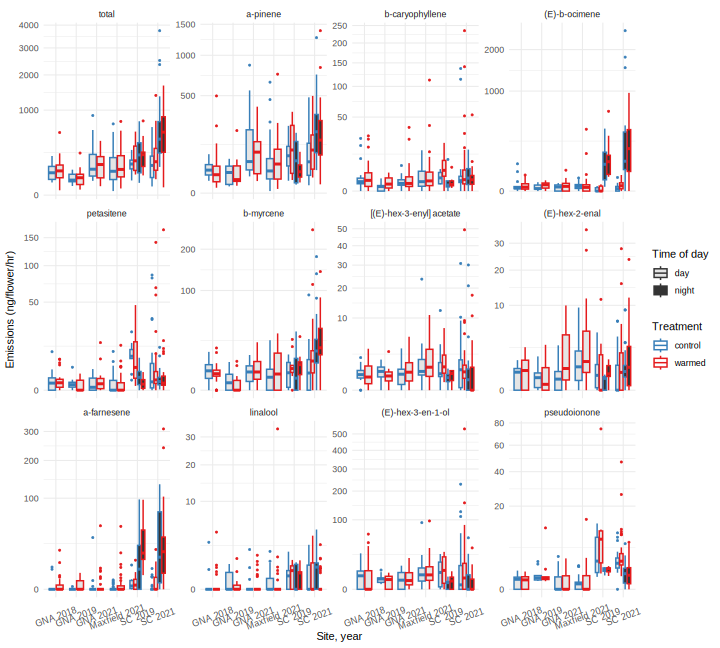
Mean change in warming treatment relative to controls.
vol.plot.treat <- vol.plot %>% filter(expt=="otc", Site!="bb") %>%
group_by(chem, PlantType, Site, Year, DN) %>% select(temp, area) %>% nest() %>%
mutate(model = map(data, ~ lm(area~temp, data=.x)),#TODO lmer with PlantID for 2021?
test = map(model, ~tidy(summary(.x)))) %>% select(-data, -model) %>% unnest(test) %>%
mutate(relchange = estimate[2]/estimate[1],#divide warming change by intercept (mean of controls)
ratio = (estimate[1] + estimate[2]) / estimate[1] ) %>% # warmed/control ratio
filter(term=="tempwarmed")
ggplot(vol.plot.treat, aes(x=paste(paste(ifelse(PlantType=="agg",Site,as.character(DN)), str_sub(Year,3,4))),
y=fct_relabel(fct_rev(chem), greekify))) +
facet_wrap(vars(PlantType), scales="free_x",
labeller = as_labeller(c(agg="I. aggregata", ten="I. tenuituba")))+
geom_tile(aes(fill=sign(relchange)* abs(relchange)^(1/3))) + scale_fill_gradient2(midpoint=0, guide="none") +
geom_text(aes(label=scales::percent(relchange, accuracy=1), fontface=as.integer(p.value < 0.05)+1))+ labs(x="",y="")+
theme_minimal() + theme(panel.grid = element_blank(), strip.text = element_text(face="italic"),
axis.text=element_text(color="black"))lmer(indole~temp+(1|PlantID), data = filter(cbind(vol,svf), expt=="otc", PlantType=="ten", DN=="day")) %>% anova() %>%
kable(caption="indole tenuituba day")| Sum Sq | Mean Sq | NumDF | DenDF | F value | Pr(>F) | |
|---|---|---|---|---|---|---|
| temp | 0.0676582 | 0.0676582 | 1 | 90 | 0.5801704 | 0.4482369 |
lmer(indole~temp+(1|PlantID), data = filter(cbind(vol,svf), expt=="otc", PlantType=="ten", DN=="night")) %>% anova() %>%
kable(caption="indole tenuituba night")| Sum Sq | Mean Sq | NumDF | DenDF | F value | Pr(>F) | |
|---|---|---|---|---|---|---|
| temp | 0.0926084 | 0.0926084 | 1 | 55.92978 | 1.016913 | 0.3175954 |
Actual temperature effects
ggplot(drop_na(vol.plot, PlantType, expt) %>% filter(expt=="otc", Site!="bb"),#TODO track down NAs
aes(x=mean_temp_C_treatment, y=area, shape=DN, color=paste(PlantType, Site, Year))) +
geom_point() + geom_smooth(se=F, method="loess", span=1)+
facet_wrap(vars(chem), scales="free_y") +
scale_y_sqrt("Emissions (ng/flower/hr)") +
scale_x_continuous("Mean temperature in controls or OTCs (\u00B0C)")+
scale_color_brewer("Species, site, year", palette = "Dark2", direction=-1)+#scale_color_manual("Species", values=spcols) +
scale_shape_manual("Time of day",values=c(1,19)) +
theme_minimal() + theme(axis.text.x=element_text(angle=20, vjust=0.5))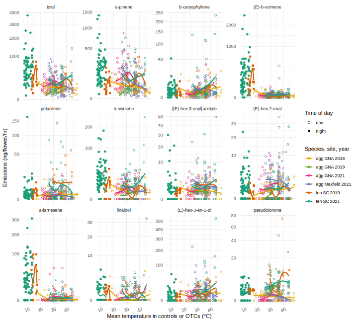
vol.plot %>% filter(expt=="otc", Site!="bb") %>% drop_na(mean_temp_C_treatment) %>%
group_by(chem, PlantType, Site, Year, DN) %>% select(mean_temp_C_treatment, area) %>% nest() %>%
mutate(model = map(data, ~ lm(area~poly(mean_temp_C_treatment, 2), data=.x)),
test = map(model, ~tidy(summary(.x)))) %>% select(-data, -model) %>% unnest(test) %>%
filter(term=="poly(mean_temp_C_treatment, 2)2", p.value < 0.05) %>% select(-term, -std.error, -statistic) %>%
arrange(p.value) %>% kable(caption="Temperature curves with a significant quadratic term")| chem | PlantType | Site | Year | DN | estimate | p.value |
|---|---|---|---|---|---|---|
| linalool | agg | Maxfield | 2021 | day | 9.845211 | 0.0060282 |
| a-pinene | agg | Maxfield | 2021 | day | 251.561188 | 0.0272190 |
| linalool | agg | GNA | 2018 | day | 1.600831 | 0.0356243 |
| total | ten | SC | 2021 | day | 441.451959 | 0.0372350 |
| (E)-hex-3-en-1-ol | ten | SC | 2021 | day | 143.327999 | 0.0434185 |
| b-caryophyllene | ten | SC | 2021 | day | 73.502472 | 0.0482241 |
Units are change (relative to the mean) per degree Celsius
vol.plot.temp <- vol.plot %>% filter(expt=="otc", Site!="bb") %>% drop_na(mean_temp_C_treatment) %>%
group_by(chem, PlantType, Site, Year, DN) %>% select(mean_temp_C_treatment, area) %>%
mutate(area=area/mean(area)) %>% nest() %>%
mutate(model = map(data, ~ lm(area~mean_temp_C_treatment, data=.x)),
test = map(model, ~tidy(summary(.x)))) %>% select(-data, -model) %>% unnest(test) %>%
filter(term=="mean_temp_C_treatment")
ggplot(vol.plot.temp, aes(x=paste(ifelse(PlantType=="agg",Site,as.character(DN)), str_sub(Year,3,4)), y=fct_rev(chem))) +
facet_wrap(vars(PlantType), scales="free_x",
labeller = as_labeller(c(agg="I. aggregata", ten="I. tenuituba")))+
geom_tile(aes(fill=estimate)) + scale_fill_gradient2(guide="none") +
geom_text(aes(label=scales::percent(estimate, accuracy=1), fontface=as.integer(p.value < 0.05)+1))+ labs(x="",y="")+
theme_minimal() + theme(panel.grid = element_blank(), strip.text = element_text(face="italic"),
axis.text=element_text(color="black"))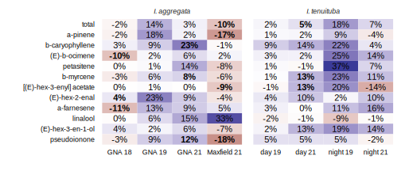
Separate temperature and treatment
bind_rows(vol.plot.temp, vol.plot.treat) %>% mutate(relchange = coalesce(relchange,estimate)) %>%
ggplot(aes(x=paste(ifelse(PlantType=="agg",Site,as.character(DN)), str_sub(Year,3,4)), y=fct_relabel(fct_rev(chem), greekify))) +
facet_grid(term ~PlantType, scales="free_x",
labeller = as_labeller(c(agg="I. aggregata", ten="I. tenuituba",
mean_temp_C_treatment="(A) Temperature", tempwarmed="(B) Treatment")))+
geom_tile(aes(fill=if_else(term =="mean_temp_C_treatment", log10(relchange+1)*5,log10(relchange+1)))) + scale_fill_gradient2(guide="none", limits=c(-1,1), oob=scales::squish) +
geom_text(aes(label=scales::percent(relchange, accuracy=1, big.mark=""), fontface=as.integer(p.value < 0.05)+1))+ labs(x="",y="")+
theme_minimal() + theme(panel.grid = element_blank(), strip.text.x = element_text(face="italic"),
axis.text=element_text(color="black"))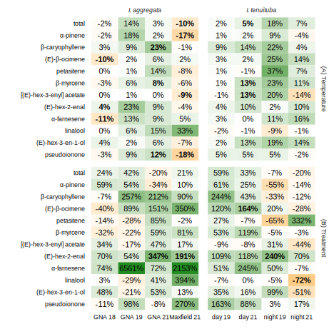
Both temperature and treatment
safe_lmer <- function(formula, data) {
if(length(unique(pull(data,as.character(findbars(formula)[[1]])[3]))) < nrow(data)*(2/3)) {
lmer(formula, data=data) #run only if there are more random effect levels than rows
} else {
lm(nobars(formula), data=data) #else drop the random effects and run an lm
}
}
vol.plot.temptreat <- vol.plot %>% filter(expt=="otc", Site!="bb") %>% drop_na(mean_temp_C_treatment) %>%
group_by(chem, PlantType, Site, Year, DN) %>% select(temp, mean_temp_C_treatment, area, PlantID) %>%
mutate(area=area/mean(area), PlantID=as.character(PlantID)) %>% nest() %>%
mutate(coef = map(data, ~tidy(safe_lmer(area ~ temp + mean_temp_C_treatment + (1|PlantID), data=.x)))) %>%
select(coef) %>% unnest(coef) %>% filter(term %in% c("tempwarmed","mean_temp_C_treatment"))
ggplot(vol.plot.temptreat, aes(x=paste(ifelse(PlantType=="agg",Site,as.character(DN)), str_sub(Year,3,4)), y=fct_rev(chem))) +
facet_grid(term ~PlantType, scales="free_x",
labeller = as_labeller(c(agg="I. aggregata", ten="I. tenuituba", mean_temp_C_treatment="Temperature", tempwarmed="Treatment")))+
geom_tile(aes(fill=estimate)) + scale_fill_gradient2(guide="none") +
geom_text(aes(label=scales::percent(estimate, accuracy=1), fontface=as.integer(p.value < 0.05)+1))+ labs(x="",y="")+
theme_minimal() + theme(panel.grid = element_blank(), strip.text = element_text(face="italic"),
axis.text=element_text(color="black"))vol.plot %>% filter(expt=="otc", Site!="bb", chem=="total") %>%
ggplot(aes(x=mean_temp_C_treatment, y=area, color=temp)) + geom_point() +
facet_wrap(vars(PlantType, Site, DN, Year)) + geom_smooth(method="lm") + scale_color_brewer(palette = "Set1", direction = -1)#TODO may need to add temp*treat interaction, since fixed slope is giving misleading conclusions
#TODO temperature range is very short in 2019 (fewer sampling days) and at night - not very informative
#TODO most of the temp variation in among sampling days, confounded if scent changes with season
#TODO no sqrt transformation, so outliers have more influence on lmsbind_rows(treat=vol.plot.treat %>% rename(value=relchange),
temp=vol.plot.temp %>% rename(value=estimate), .id="variable") %>%
select(-term, -std.error, -statistic, -p.value, -ratio, -estimate) %>%
pivot_wider(names_from =variable, values_from=value) %>%
ggplot(aes(y=treat, x=temp, color=paste(PlantType, Site, DN, Year))) +
geom_hline(yintercept=0) + geom_vline(xintercept=0) +
geom_smooth(se=F, method="lm") +
geom_text(aes(label=chem), show.legend = F)+
theme_minimal() + scale_y_continuous(labels=scales::percent_format(),limits=c(NA,4)) +
scale_x_continuous(labels=scales::percent_format()) + scale_color_brewer(palette = "Set2") +
labs(x="Change in emissions per degree C", y="Change in emissions in warming treatment",
color="Species, site, time, year")vol.long.meta <- gather(cbind(sample=rownames(vol), total=rowSums(vol), vol), key="chem",value="area", 2:(ncol(vol)+2), factor_key=T) %>% left_join(svf) %>% mutate(chem=factor(chem, levels=c("total",colnames(vol))))
vol.plot.treat <- vol.long.meta %>% filter(expt=="otc", Site!="bb") %>%
group_by(chem, PlantType, DN) %>% select(temp, area) %>% nest() %>%
mutate(model = map(data, ~ lm(area~temp, data=.x)),#TODO lmer with PlantID for 2021?
test = map(model, ~tidy(summary(.x)))) %>% select(-data, -model) %>% unnest(test) %>%
mutate(relchange = estimate[2]/estimate[1],#divide warming change by intercept (mean of controls)
ratio = (estimate[1] + estimate[2]) / estimate[1] ) %>% # warmed/control ratio
filter(term=="tempwarmed")
vol.plot.temp <- vol.long.meta %>% filter(expt=="otc", Site!="bb") %>% drop_na(mean_temp_C_treatment) %>%
group_by(chem, PlantType, DN) %>% select(mean_temp_C_treatment, area) %>%
mutate(area=area/ifelse(mean(area)==0, 1, mean(area))) %>% nest() %>%
mutate(model = map(data, ~ lm(area~mean_temp_C_treatment, data=.x)),
test = map(model, ~tidy(summary(.x)))) %>% select(-data, -model) %>% unnest(test) %>%
filter(term=="mean_temp_C_treatment")
vol.plot.temptreat.sep <- bind_rows(treat=vol.plot.treat %>% rename(value=relchange),
temp=vol.plot.temp %>% rename(value=estimate), .id="variable") %>%
select(-term, -std.error, -statistic, -p.value, -ratio, -estimate) %>%
pivot_wider(names_from =variable, values_from=value)
vol.plot.temptreat.sep %>% filter(treat <15) %>%
ggplot(aes(y=treat, x=temp, color=paste(PlantType, DN))) +
geom_hline(yintercept=0) + geom_vline(xintercept=0) +
geom_smooth(se=F, method="lm") +
geom_text(aes(label=chem), show.legend = F)+
theme_minimal() + scale_y_continuous(labels=scales::percent_format()) +
scale_x_continuous(labels=scales::percent_format()) + scale_color_brewer(palette = "Set2") +
labs(x="Change in emissions per degree C", y="Change in emissions in warming treatment",
color="Species, site, time, year")
vol.plot.temptreat.sep %>% filter(DN=="day") %>%
left_join(ipochemsf, by=join_by("chem"=="shortname")) %>%
ggplot(aes(y=treat, x=temp, color=class)) +
geom_hline(yintercept=0) + geom_vline(xintercept=0) +
geom_text(aes(label=chem, fontface=as.integer(PlantType)))+
theme_minimal() + scale_y_continuous(labels=scales::percent_format()) +
scale_x_continuous(labels=scales::percent_format()) + scale_color_manual(values=class_pal) +
labs(x="Change in emissions per degree C", y="Change in emissions in warming treatment",
color="Class", title="Daytime changes", subtitle="tenuituba = bold text, aggregata = not bold")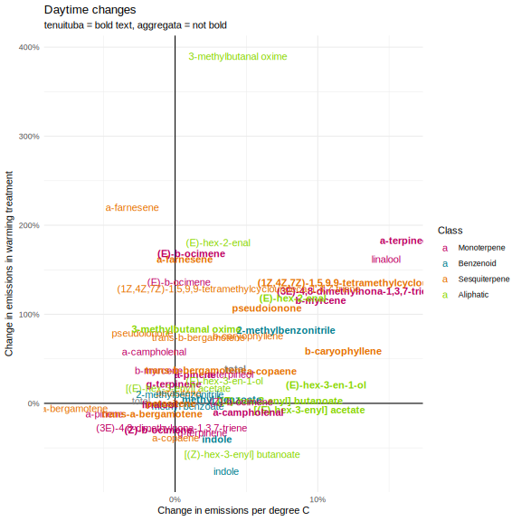
vol.plot.temptreat.sep %>% group_by(PlantType, DN) %>%
summarize(r=cor(temp, treat),
P = cor.test(temp, treat)$p.value) %>%
kable(caption="Correlation between treatment and temperature effects", digits=3)| PlantType | DN | r | P |
|---|---|---|---|
| agg | day | 0.252 | 0.215 |
| ten | day | 0.467 | 0.016 |
| ten | night | -0.196 | 0.336 |
Soil moisture effects
ggplot(drop_na(vol.plot, PlantType, expt) %>% filter(expt=="otc", Site!="bb"),#TODO track down NAs
aes(x=SoilVWC, y=area, shape=DN, color=paste(PlantType, Site, Year))) +
geom_point() + geom_smooth(se=F, method="loess", span=1)+
facet_wrap(vars(chem), scales="free_y") +
scale_y_sqrt("Emissions (ng/flower/hr)") +
scale_x_continuous("Soil volumetric water content (%)")+
scale_color_brewer("Species, site, year", palette = "Dark2", direction=-1)+#scale_color_manual("Species", values=spcols) +
scale_shape_manual("Time of day",values=c(1,19)) +
theme_minimal() + theme(axis.text.x=element_text(angle=20, vjust=0.5))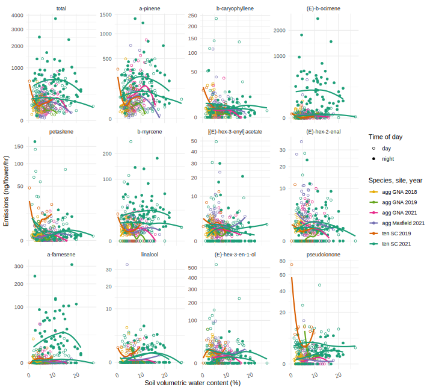
vol.plot %>% filter(expt=="otc", Site!="bb") %>% drop_na(SoilVWC) %>%
group_by(chem, PlantType, Site, Year, DN) %>% select(SoilVWC, area) %>% nest() %>%
mutate(model = map(data, ~ lm(area~poly(SoilVWC, 2), data=.x)),
test = map(model, ~tidy(summary(.x)))) %>% select(-data, -model) %>% unnest(test) %>%
filter(term=="poly(SoilVWC, 2)2", p.value < 0.05) %>% select(-term, -std.error, -statistic) %>%
arrange(p.value) %>% kable(caption="Soil moisture curves with a significant quadratic term")| chem | PlantType | Site | Year | DN | estimate | p.value |
|---|---|---|---|---|---|---|
| pseudoionone | ten | SC | 2019 | day | 43.682563 | 0.0022612 |
| total | ten | SC | 2019 | day | 307.484757 | 0.0054685 |
| petasitene | ten | SC | 2019 | day | 27.791966 | 0.0186905 |
| b-caryophyllene | ten | SC | 2019 | day | 10.284161 | 0.0337684 |
| (E)-b-ocimene | ten | SC | 2019 | day | 2.927797 | 0.0394152 |
| linalool | ten | SC | 2019 | day | 1.064876 | 0.0432152 |
| a-pinene | ten | SC | 2019 | day | 171.534654 | 0.0466853 |
Day/night changes
Mean change at night relative to day.
#TODO lmer(area~DN+(1|PlantID)) gives negative intercepts
vol.plot.DN <- vol.long.meta %>% filter(!(PlantType=="agg" & expt=="otc")) %>%
group_by(chem, expt, PlantType, Year) %>% select(DN, area, PlantID) %>% nest() %>%
mutate(model = map(data, ~ lm(area~DN, data=.x)),
test = map(model, ~tidy(summary(.x)))) %>% select(-data, -model) %>% unnest(test) %>%
mutate(relchange = estimate[2]/estimate[1],#divide warming change by intercept (mean of controls)
ratio = (estimate[1] + estimate[2]) / estimate[1] ) %>% # warmed/control ratio
filter(term=="DNnight")
ggplot(vol.plot.DN %>% filter(abs(relchange)<1000), aes(x=str_sub(Year,3,4), y=fct_rev(chem))) +
facet_wrap(vars(PlantType, expt), scales="free_x")+
geom_tile(aes(fill=sign(relchange)* abs(relchange)^(1/3))) + scale_fill_gradient2(midpoint=0, guide="none") +
geom_text(aes(label=scales::percent(relchange, accuracy=1), fontface=as.integer(p.value < 0.05)+1))+ labs(x="",y="")+
theme_minimal() + theme(panel.grid = element_blank(), strip.text = element_text(face="italic"),
axis.text=element_text(color="black"))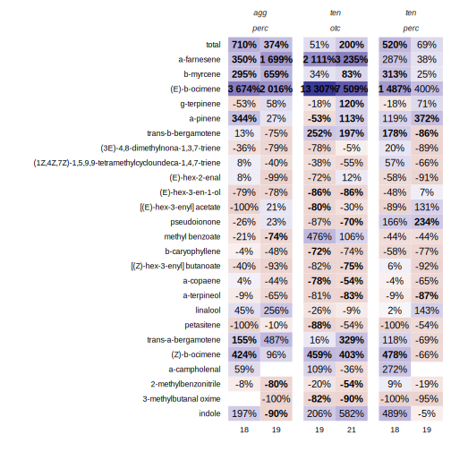
vol.plot.DN <- vol.long.meta %>% filter(!(PlantType=="agg" & expt=="otc")) %>%
group_by(chem, expt, PlantType) %>% select(DN, area, PlantID) %>% nest() %>%
mutate(model = map(data, ~ lm(area~DN, data=.x)),
test = map(model, ~tidy(summary(.x)))) %>% select(-data, -model) %>% unnest(test) %>%
mutate(relchange = estimate[2]/estimate[1],#divide warming change by intercept (mean of controls)
ratio = (estimate[1] + estimate[2]) / estimate[1] ) %>% # warmed/control ratio
filter(term=="DNnight")
ggplot(vol.plot.DN, aes(x="N/D", y=fct_rev(chem))) +
facet_wrap(vars(PlantType, expt), scales="free_x")+
geom_tile(aes(fill=sign(relchange)* abs(relchange)^(1/3))) + scale_fill_gradient2(midpoint=0, guide="none") +
geom_text(aes(label=scales::percent(relchange, accuracy=1), fontface=as.integer(p.value < 0.05)+1))+ labs(x="",y="")+
theme_minimal() + theme(panel.grid = element_blank(), strip.text = element_text(face="italic"),
axis.text=element_text(color="black"))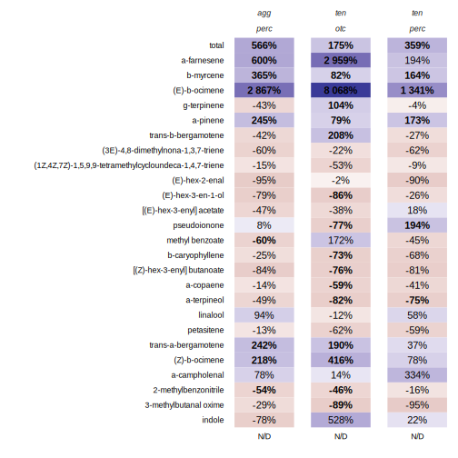
Leaf volatiles
Inventory
Dropped 2 samples from 2018 without leaf mass. Volatiles units are ng per hour per gram dry leaf.
svl %>% count(PlantType, Treat, expt, Year) %>% kable(caption="Sample size")| PlantType | Treat | expt | Year | n |
|---|---|---|---|---|
| aggleaf | control | otc | 2019 | 7 |
| aggleaf | control | perc | 2019 | 4 |
| aggleaf | warmed | otc | 2019 | 11 |
| aggleaf | warmed | perc | 2019 | 4 |
| tenleaf | control | otc | 2019 | 9 |
| tenleaf | control | perc | 2019 | 3 |
| tenleaf | warmed | otc | 2019 | 8 |
| tenleaf | warmed | perc | 2019 | 2 |
sort(colSums(vol.leaf)/sum(colSums(vol.leaf)) ) undecanal hexan-1-ol
0.003459435 0.005312008
(E)-12-cyclopropyldodec-11-en-1-ol [(Z)-hex-3-enyl] pentanoate
0.008473771 0.009631390
(Z)-hex-2-en-1-ol pseudoionone
0.010058645 0.010463577
hex-2-enal 1-penten-3-ol
0.011394371 0.012608089
petasitene b-caryophyllene
0.014920964 0.016102368
4-methylpentan-1-ol a-campholenal
0.017336836 0.018115110
(E)-4-oxohex-2-enal (E)-hex-2-enal
0.022916182 0.081556502
[(E)-hex-3-enyl] acetate (E)-hex-3-en-1-ol
0.114923650 0.315435931
a-pinene
0.327291173 Heatmap
#cairo_pdf("ipo_heatmap_leaf.pdf", width=12, height=12)
ph_leaf <- pheatmap(as.matrix(t(vol.leaf))^(1/3),
cluster_cols=T, show_colnames=F,
clustering_method="mcquitty", clustering_distance_rows="correlation",
clustering_distance_cols=vegdist(vol.leaf, method = "bray"),
clustering_callback = function(hc, ...){dendsort(hc, type="average")},
scale="none", color=inferno(512),
annotation_col = data.frame(svl %>% select("PlantType", "expt", "Treat"), row.names=rownames(vol.leaf)),
fontsize = 10, border_color = NA, legend=F, annotation_legend=T, cutree_rows=6
)
#dev.off()Leaf NMDS
set.seed(1)
nmds.vol_leaf <- metaMDS(sqrt(vol.leaf), dist="bray", autotransform = FALSE, trace=F)
TEY <- with(svl, factor(paste(PlantType,expt,Year)))
TEYcols <- brewer.pal(9, "Paired")#[c(1:4,8,5:6)]
spcols <- c(aggleaf="red", tenleaf="violet")
ordiplot(nmds.vol_leaf, type = "n")
legend("bottomleft", levels(TEY), fill=TEYcols, cex=0.9)
points(nmds.vol_leaf, display="sites", col=TEYcols[TEY], pch=19)
text(nmds.vol_leaf, display="species", cex=0.7, col="grey20")
#points(nmds.vol_leaf, display="sites", col=viridis(100)[sqrt(rowSums(vol.leaf))/26], pch=19)CAP - OTCs
svf.otc <- svl %>% filter(expt=="otc")
vol.otc <- vol.leaf[svl$expt=="otc",]
(cap.otc.comb <- capscale(sqrt(vol.otc) ~ PlantType + temp, distance="bray", data=svf.otc)) #can't test temp, missing dataCall: capscale(formula = sqrt(vol.otc) ~ PlantType + temp, data =
svf.otc, distance = "bray")
Inertia Proportion Rank
Total 4.8289 1.0000
Constrained 0.6177 0.1279 2
Unconstrained 4.7268 0.9789 19
Imaginary -0.5156 -0.1068 15
Inertia is squared Bray distance
Species scores projected from 'sqrt' 'vol.otc'
Eigenvalues for constrained axes:
CAP1 CAP2
0.4777 0.1400
Eigenvalues for unconstrained axes:
MDS1 MDS2 MDS3 MDS4 MDS5 MDS6 MDS7 MDS8
1.4888 0.8541 0.5387 0.3637 0.3156 0.2593 0.2007 0.1452
(Showing 8 of 19 unconstrained eigenvalues)anova(cap.otc.comb, by="margin") %>% kable(caption="CAP")| Df | SumOfSqs | F | Pr(>F) | |
|---|---|---|---|---|
| PlantType | 1 | 0.4673046 | 3.1636345 | 0.012 |
| temp | 1 | 0.1404073 | 0.9505522 | 0.412 |
| Residual | 32 | 4.7267622 | NA | NA |
prop.expl <- summary(cap.otc.comb)$cont$importance
ax.labs <- paste0(colnames(prop.expl)[1:2], " (",round(100*prop.expl[2,1:2]),"% explained)")
cap.df <- fortify(cap.otc.comb)
ggplot(mapping=aes(x=CAP1, y=CAP2, label=Label)) +
geom_point(data=cap.df %>% filter(Score=="sites") %>% bind_cols(svf.otc), aes(color=temp, shape=PlantType), size=3)+
geom_segment(data=cap.df %>% filter(Score=="biplot", Label %in% arrowvars), aes(x=0,y=0,xend=CAP1*1.2, yend=CAP2*1.2),
arrow=arrow(length=unit(0.5, "lines")), color="white")+
geom_text(data=cap.df %>% filter(Score=="biplot", Label %in% arrowvars[2]) %>% mutate(Label=names(arrowvars[2])),
aes(x=CAP1*1.3, y=CAP2*1.3, angle=atan(CAP2/CAP1)*180/pi, hjust=1), fontface="bold", color="white", size=5) +
geom_text(data=cap.df %>% filter(Score=="centroids") %>% mutate(Label=c("aggregata","tenuituba","","")),
aes(x=CAP1, y=CAP2), fontface=4, color="white", size=5) +
geom_text_repel(data=cap.df %>% left_join(ipochems, by=c("Label"="name")) %>% filter(Score=="species", sqrt(CAP1^2+CAP2^2)>0.2),
aes(x=CAP1*3.2, y=CAP2*3.2), size=4, color="black", point.size=NA, box.padding=0)+
scale_color_manual("Treatment", values=tempcol) +
scale_shape_manual("Species", values=c(19,15), labels=c(expression(italic("I. aggregata")),expression(italic("I. tenuituba")))) +
labs(x=ax.labs[1], y=ax.labs[2])+
coord_fixed() + theme_bw() + theme(panel.grid = element_blank(), panel.background = element_rect(fill="grey70"))
lmer(sqrt(Total) ~ PlantType + temp + (1|PlantID), data = svf.otc) %>% anova %>% kable(caption="total emissions")| Sum Sq | Mean Sq | NumDF | DenDF | F value | Pr(>F) | |
|---|---|---|---|---|---|---|
| PlantType | 7305.962 | 7305.962 | 1 | 21.36177 | 2.395081 | 0.1364056 |
| temp | 3051.723 | 3051.723 | 1 | 19.06651 | 1.000433 | 0.3297315 |
CAP - Percivals
svl.perc <- svl %>% filter(expt=="perc")
cap.leaf.perc <- capscale(sqrt(vol.leaf[svl$expt=="perc",]) ~ PlantType+Temp, distance="bray", data=svl.perc)
summ.cap <- summary(cap.leaf.perc)
prop.expl <- summ.cap$cont$importance[2,c("CAP1","CAP2")]
ax.labs <- paste0("CAP", 1:2, " (",round(100*prop.expl),"% explained)")
(anova.cap <- anova(cap.leaf.perc, by="margin"))Permutation test for capscale under reduced model
Marginal effects of terms
Permutation: free
Number of permutations: 999
Model: capscale(formula = sqrt(vol.leaf[svl$expt == "perc", ]) ~ PlantType + Temp, data = svl.perc, distance = "bray")
Df SumOfSqs F Pr(>F)
PlantType 1 0.07756 0.2629 0.961
Temp 1 0.18173 0.6159 0.635
Residual 10 2.95071 Composition
absamounts.leaf <- svl %>% select(expt, PlantType, DN) %>%
bind_cols(vol.leaf) %>% pivot_longer(all_of(colnames(vol.leaf))) %>%
group_by(PlantType, name) %>%
summarize(mean=mean(value), se=sd(value)/sqrt(n())) %>% arrange(PlantType, desc(mean))
ggplot(absamounts.leaf, aes(y=fct_reorder(name, mean, base::mean), x=mean, color=PlantType))+
geom_pointrange(aes(xmin=mean-se, xmax=mean+se), position=position_dodge2(width=0.4)) + scale_x_sqrt(expand=c(0,0))+
labs(x="Mean nanograms per g dry mass per hour",y="",color="Species")absamounts.leaf %>% mutate(across(all_of(c("mean", "se")), ~format(round(.x/1000, 2), nsmall = 2))) %>%
mutate(meanse = paste(mean,"\U00B1", se), .keep="unused") %>%
pivot_wider(names_from=PlantType, values_from=meanse) %>%
kable(caption="Leaf volatiles, mean \U00B1 se milligrams per g dry mass per hour", digits=2)| name | aggleaf | tenleaf |
|---|---|---|
| (E)-hex-3-en-1-ol | 7.33 ± 1.69 | 3.14 ± 1.13 |
| a-pinene | 5.10 ± 1.54 | 6.23 ± 1.98 |
| (E)-hex-2-enal | 1.93 ± 0.56 | 0.77 ± 0.20 |
| [(E)-hex-3-enyl] acetate | 1.86 ± 0.43 | 2.10 ± 0.72 |
| (E)-4-oxohex-2-enal | 0.50 ± 0.11 | 0.27 ± 0.08 |
| 4-methylpentan-1-ol | 0.42 ± 0.16 | 0.15 ± 0.08 |
| hex-2-enal | 0.33 ± 0.14 | 0.04 ± 0.02 |
| 1-penten-3-ol | 0.28 ± 0.06 | 0.14 ± 0.04 |
| (Z)-hex-2-en-1-ol | 0.24 ± 0.07 | 0.10 ± 0.04 |
| (E)-12-cyclopropyldodec-11-en-1-ol | 0.21 ± 0.07 | 0.07 ± 0.04 |
| petasitene | 0.17 ± 0.06 | 0.35 ± 0.13 |
| b-caryophyllene | 0.17 ± 0.05 | 0.40 ± 0.21 |
| a-campholenal | 0.13 ± 0.08 | 0.52 ± 0.26 |
| hexan-1-ol | 0.11 ± 0.05 | 0.07 ± 0.03 |
| pseudoionone | 0.07 ± 0.03 | 0.31 ± 0.09 |
| [(Z)-hex-3-enyl] pentanoate | 0.05 ± 0.05 | 0.30 ± 0.11 |
| undecanal | 0.02 ± 0.01 | 0.11 ± 0.04 |